Министерство науки и высшего образования Российской Федерации
Федеральное государственное бюджетное образовательное учреждение
высшего образования
«Оренбургский государственный университет»
Кафедра программного обеспечения вычислительной техники и
автоматизированных систем
Н.А. Соловьев, Д.В. Горбачев, И.А. Щудро
МЕТОДОЛОГИЯ НАУЧНЫХ
ИССЛЕДОВАНИЙ ПРОБЛЕМ ИНФОРМАТИКИ И ВЫЧИСЛИТЕЛЬНОЙ ТЕХНИКИ
Учебное пособие
Рекомендовано ученым советом федерального бюджетного образовательного учреждения высшего образования «Оренбургский государственный университет» для обучающихся по образовательным программам высшего образования направлений подготовки: 09.04.01 – Информатика и вычислительная техника, 09.04.04 – Программная инженерия
Оренбург
2022
|
ББК 72.5я73+32.972я73
С60
Рецензент – Боровский А.С., доктор технических наук, доцент, зав. кафедрой управления и информатики в технических системах ФГБОУВО «Оренбургский государственный университет».
|
Авторы: Соловьев, Н.А., Горбачев Д.В., Щудро И.А. Методология научных исследований проблем информатики и вычислительной техники: учебное пособие / Н.А. Соловьев, [и др.]– Оренбург: ООО ИПК «Университет», 2022. – 120 с.
ISBN 978-5-7410-2723-3
Учебное пособие предназначено для обучающихся из перечня направлений подготовки высшего образования 09.00.00 – Информатика и вычислительная техника: 09.04.01 Информатика и вычислительная техника и 09.04.04 Программная инженерия при изучении дисциплины: «Методология научных исследований».
УДК 001.891:004.42(о75.8)
ББК 72.5я73+32.972я73
ISBN 978-5-7410-2723-3
© Соловьев Н.А. и др.
© ОГУ, 2022
|
Содержание
Глава 1 Основные понятия о науке и научных исследованиях
1.1 Методология научных исследований
1.2 Научно-исследовательская работа
1.3 Структура и основное содержание дисциплины
Глава 2 Философские основы научных исследований
2.1 Законы философии в научных исследованиях
2.2 Тема исследования как составная часть проблемной ситуации
2.3 Методика информационного поиска
3.1 Принципы системного анализа
3.2 Элементы и технология системного подхода в научных исследованиях
3.3 Пример системного анализа информационных процессов
Глава 4 Концептуальная постановка задачи научных исследований
4.1 Методика формирования цели и задач научного исследования
4.2 Выдвижение гипотезы достижения цели исследований и её формализация
Глава 5 Методология теоретического этапа научных исследований
5.2 Математическое моделирование
5.3 Компьютерное моделирования
Глава 6 Методика выполнения теоретического этапа научных исследований
6.1 Выбор метода моделирования и типовой модели описания информационных процессов
6.2 Развитие типовой модели к предметной области научных исследований
6.3 Методика использования модели эс для достижения цели исследования
6.4 Алгоритмизация аппарата моделирования
Глава 7 Методология проектного этапа научных исследований
7.1 Разработка архитектуры автоматизированной информационной системы
7.2 Выбор инструментальных средств разработки компонентов автоматизированной системы
7.3 Проектирование структуры данных
7.4 Разработка алгоритмов программных компонент автоматизированной системы
7.5 Тестирование разработанных программных средств
Глава 8 Методология экспериментального этапа научного исследования
8.1 Методологические основы заключительного этапа научных исследований
8.2 Методика оценки эффективности средств автоматизации
8.3 Введение в теорию эксперимента
9 Апробация результатов научных исследований
9.2 Подготовка презентации научного доклада
Список использованных источников
Стремительное развитие научно-технической прогресса, быстрое обновление знаний, увеличение объема научной и научно-технической информации с одной стороны и повышение требований к выпускникам магистратуры по общенаучной и профессиональной подготовке, способности самостоятельной научной творческой работе – с другой, определяют важность изучения методологии научных исследований, организации научного знания и научной деятельности.
В учебном пособии решаются задачи формирования:
– знания методов научно-исследовательской работы, её планирования и организации в масштабах отдельного исследователя; выработки навыков поиска, анализа и обработки научной информации по теме исследования;
– умения формулировать цель и задачи исследования, способности понимания основ планирования эксперимента и обработки результатов;
– способности апробации результатов исследований в виде отчетов, докладов и научных статей.
В основе учебного пособия лежит курс лекций профессора Н.А. Соловьева по дисциплине «Методология научных исследований». Материал доработан на основе многолетнего опыта руководства выпускными квалификационными работами по направлениям подготовки 09.04.01 Информатика и вычислительная техника и 09.04.04 Программная инженерия на кафедре программного обеспечения вычислительной техники и автоматизированных систем ФГБОУ ВО «Оренбургский государственный университет».
Методология – это учение об организации деятельности. Поскольку методология рассматривается как учение об организации деятельности, необходимо обратиться, в первую очередь, к основному понятию деятельности.
Деятельность определяется как активное взаимодействие человека с окружающей действительностью, в ходе которого человек выступает как субъект, целенаправленно воздействующий на объект и удовлетворяющий таким образом свои потребности.
Методология с точки зрения научной деятельности имеет расширенное толкование. Методология – учение о системе понятий и отношений между ними: базисных определений и принципов, методов, моделей и средств их реализации в организации и построении научно-практической деятельности людей.
Понятие – мысль, отражающая в обобщенной и абстрагированной форме предметы, явления и связи между ними посредством фиксации общих и специфических признаков, отражающих свойства предметов и явлений.
Наука – область человеческой деятельности, направленная на выработку и систематизацию объективных знаний о действительности.
Система научных знаний отражается в научных понятиях, гипотезах, законах, теориях, идеях и фактах позволяющих предвидеть события, что фиксируется в различных видах публикаций (книгах, журналах и др.). Этот систематизированный опыт и научные знания ряда поколений обладают группой признаков, главнейшие из которых следующие:
– всеобщность (принадлежность результатов научной деятельности всему человечеству, при этом каждый может извлекать из нее необходимое, так как эта система – всеобщее достояние);
– достоверность (система знаний только тогда становится научной, когда каждый факт, накопленное знание и следствие из известных законов или теорий можно достоверно проверить для уточнения истины);
– воспроизводимость (любыми методами может повторить открытое явление, т. е. существует определенный закон природы и открытое явление входит в систему научных знаний);
– устойчивость (быстрое устаревание системы знаний указывает на недостаточную глубину проработки накопленных данных или неточность принятой гипотезы).
На рисунке 1.1 представлена классификация знаний о действительности.
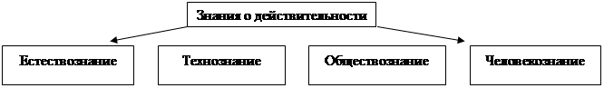
Рисунок 1.1 – Классификация знаний
Естествознание представляет собой учение о природе (астрономия, геология и т.п.), технознание – учение о технике (математика, кибернетика и т.п.), обществознание – учение об обществе (социология, политология и т.д.), человекознание – учение о человеке (медицина, психология и т.п.). Предметные области научных исследований укрупненной группы направлений 09.00.00 - Информатика и вычислительная техника относится к технознанию и включает в себя четыре направления магистратуры:
- 09.04.01 – Информатика и вычислительная техника;
- 09.04.02 – Информационные системы и технологии;
- 09.04.03 – Прикладная информатика:
- 09.04.04 – Программная инженерия.
Направление 09.04.01 имеет три магистерские программы:
- «Информационное и программное обеспечение автоматизированных систем» (ИПО АС);
- «Разработка информационно-вычислительных систем и телекоммуникаций» (РИВСТ);
- «Системы автоматизации проектирование в машиностроении» (САПМ).
По направлению 09.04.04 одна магистерская программа «Разработка информационно-телекоммуникационных систем» (РИТС)
Научно-исследовательская деятельность по указанным магистерским программам включает:
- разработку планов и программ проведения научных исследований и технических разработок;
- сбор, обработку, анализ и систематизацию научно-технической информации по теме исследования, выбор методов и средств решения задачи;
- разработку математических моделей исследуемых процессов и систем;
- разработку методик автоматизации информационных процессов (принятия решений);
- организацию проведения экспериментов (испытаний), анализ их результатов;
- подготовку научно-технических отчетов, обзоров, публикаций по результатам выполненных исследований.
Теоретической основой указанных магистерских программ является кибернетика – наука об общих закономерностях процессов управлении, связи и переработки информации в различных системах
Основоположниками кибернетики считаются советские ученые А.С. Лебедев (аппаратное обеспечение – ЭВМ «МИР», 1951 год), Андрей Петрович Ершов (теоретические основы программирования), Владимир Михайлович Глушков (безбумажный документооборот) и зарубежные исследователи Норберт Винер, Клод Шенон.
Теоретические направления кибернетики: теория управления, теория автоматов и формальных языков, теория передачи сигналов, теория алгоритмов, теория принятия решений, исследование операций, цифровая обработка сигналов и др.
Методы кибернетики: автоматического управление, искусственного интеллекта, статистических решений, распознавание образов, компьютерное зрение, принятия решений.
Научно-исследовательская работа (научное исследование), как процесс любого труда включает в себя три основных компонента: собственно научный труд (целесообразную деятельность человека), предмет научного труда и средства научного труда.
Целесообразная научная деятельность человека, опирающаяся на совокупность конкретных методов познания и необходимая для приобретения новых или уточненных знаний об объекте исследования, использует соответствующее научное оборудование (измерительное, вычислительное и др.).
Предмет научного труда – это объект исследования, на познание которого направлена деятельность исследователя. Объектом исследования может быть любой предмет материального мира (например, автоматизированная информационная система (АИС) или её компоненты: база данных, СУБД, аналитические приложения), явление (например,), связь между явлениями (например, объемом базы данных и быстродействием АИС), свойство (например, информационная безопасность АИС). Помимо объекта в предмет исследования входят и предшествующие знания об объекте.
В зависимости от своего целевого назначения, степени связи с природой или промышленным производством, глубины и характера работы научных исследований подразделяются (классифицируются) на виды:
Фундаментальные – это глубокое и всестороннее исследование предмета с целью получения новых основополагающих знаний, а также выяснение закономерностей изучаемых явлений, результаты которых не предполагаются для непосредственного промышленного использования. Фундаментальные исследования связаны со значительным риском и неопределенностью с точки зрения получения конкретного положительного практического результата, вероятность которого не выше 10 %. Однако именно фундаментальные исследования составляют основу развития науки и общественного производства.
Прикладные – это такие исследования, которые используют достижения фундаментальной науки для решения практических задач, объекты исследования в которых обычно носят «искусственный» характер (системы, технологии, материалы). Практическая ориентация (направленность) и отчетливое целевое назначение прикладных исследований делают вероятность получения ожидаемых от них результатов весьма значительной, на уровне 80-90 %.
Научно-исследовательские и опытно-конструкторские разработки (НИОКР) — соединение науки с производством, обеспечивающее как научные, так и инженерные проработки технического проекта. Здесь результаты научных исследований принимают форму, позволяющую использовать их в других отраслях общественного производства.
Несмотря на то, что границы между тремя видами научной деятельности подвижны, их объединяет принадлежность к сфере научной деятельности.
Научное исследование, проводимое в области прикладных наук, проходит ряд этапов, которые составляют структуру научного исследования. На рисунке 1.2 представлены основные этапы прикладных научных исследований.
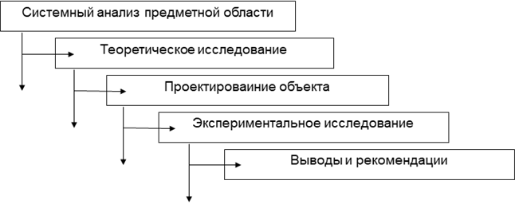
Рисунок 1.2 – Основные этапы научного исследования
1. Системный анализ предметной области. Научное исследование невозможно без постановки научной проблемы. Проблема – это сложный теоретический или практический вопрос, требующий изучения, разрешения. Следовательно, проблема – это то, что еще неизвестно, что возникает в ходе развития науки и потребности общества. Проблемы не возникают на пустом месте, они всегда вырастают из результатов, полученных ранее. Любая проблема содержит два неразрывно связанных элемента: объективное знание о том, что еще неизвестно, и предположение о возможности получения новых закономерностей либо принципиально нового практического применения ранее полученного знания. Предполагается, что это новое знание обществу необходимо. Необходимость и актуальность научного исследования доказывается в процессе системного анализа предметной области, что обосновывает постановку задачи исследований.
Необходимо сделать определенное отступление. Как правило, разрешению проблемы посвящаются научные исследования уровня докторских диссертаций. Каждая проблема включает ряд научных задач, одна из которых решается в кандидатских диссертациях. Для магистерских диссертаций характерно получение научных результатов (рекомендаций) на основе решения инженерной задачи, например, построения АИС в конкретной предметной области научного исследования.
Этап состоит не только в поиске проблемы (задачи), которую необходимо исследовать, но и в точной, четкой формулировке цели научного исследования, от этого значительно зависит его успешный исход.
Аналитический этап завершается выработкой рабочей гипотезы достижения цели исследований и осуществляется на основе критического анализа собранной исходной информации, при этом гипотеза может иметь несколько вариантов, из которых выбирают наиболее целесообразный. Для уточнения гипотезы иногда проводят предварительные эксперименты с целью более глубокого изучения исследуемого объекта.
2. Теоретическое исследование. В прикладных технических исследованиях теоретическое исследование состоит в анализе и синтезе закономерностей (моделей) и их применение к исследуемому объекту, а также в поиске с помощью аппарата математики и других дисциплин новых, еще неизвестных, закономерностей.
Цель теоретического исследования – как можно полнее описать наблюдаемые явления, связи между ними, получить больше следствий из принятой рабочей гипотезы. Такое исследование аналитически развивает принятую гипотезу и должно привести к разработке теории исследуемой проблемы, т. е. к научно обобщенной системе знаний в пределах данной проблемы. Эта теория, в свою очередь, должна объяснять и предсказывать факты и явления, относящиеся к исследуемой проблеме. Решающим фактором является критерий практики.
3. Отличительной особенность прикладных технических исследований является наличие проектного раздела, в котором на основании теоретических исследований создается новый объект с улучшенными свойствами, позволяющий решить проблему.
4. Экспериментальное исследование. Эксперимент, или научно поставленный опыт – наиболее сложный и трудоемкий этап научного исследования. Цель эксперимента различна и зависит от характера научного исследования и последовательности его проведения. При классическом развитии исследования эксперимент проводится после теоретического исследования. В этом случае эксперимент подтверждает или, что реже, опровергает результаты теоретических исследований. Часто порядок исследования бывает иным, и эксперимент предшествует теоретическому исследованию. Это характерно для поисковых экспериментов, при отсутствии достаточной теоретической базы исследования. В этом случае теория объясняет и обобщает результаты эксперимента.
В рамках научных исследований проблем информатики и вычислительной техники перед экспериментом создается (проектируется) прототип АИС для автоматизации определенных информационных процессов на основе предложенных моделей и затем с помощью созданной системы проводятся экспериментальные исследования и формируются научные результаты в форме научных рекомендаций.
5. Выводы и рекомендации. На этом этапе подводятся итоги исследования, т. е. формулируются полученные результаты и проверяется их соответствие поставленной цели (задаче). Как правило, сопоставление результатов теоретического и экспериментального исследования является подтверждение рабочей гипотезы и формулирование следствий (рекомендаций). Для чисто теоретических исследований этот этап является заключительным. Для большинства работ в области техники возникает еще один этап.
6. Определение направлений дальнейших исследований – этап выработки содержания дальнейших научных направлений развития научный знаний в исследуемой предметной области.
Научно-исследовательская работа магистра (НИРМ) по направлению укрупненной группы 09.00.00 – Информатика и вычислительная техника имеет свои особенности и, как правило, включает 4 типовые раздела, представленные на рисунках 1.3 – 1.6. Каждый раздел оформляется в виде отчета и проходит апробацию в научных изданиях.
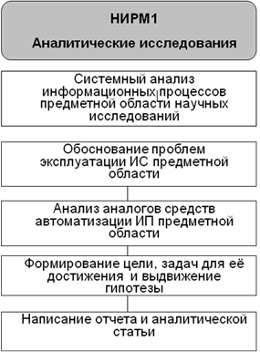
Рисунок 1.3 – Технология исследований и структура отчета по НИРМ1
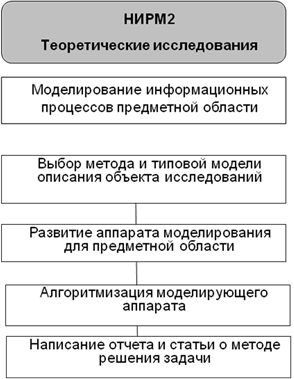
Рисунок 1.4 – Технология исследований и структура отчета по НИРМ2
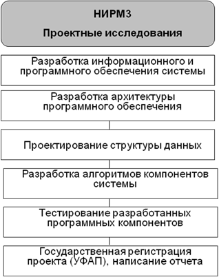
Рисунок 1.5 – Технология исследований и структура отчета по НИРМ3
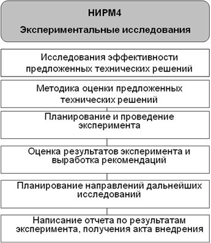
Рисунок 1.6 – Технология исследований и структура отчета по НИРМ4
Цель освоения дисциплины: формирование представлений о современной методологии научных исследований проблем информатики и вычислительной техники на методологических основах системного анализа информационных процессов предметной области научного исследования.
Задачи: формировать знания методов научной работы, ее планирования и организации в масштабах отдельного исследователя; выработать навыки поиска, анализа и обработки научной информации по теме исследования; сформировать умения формулировать цель и задачи исследования, методов теоретических и проектных исследований, способности понимания основ планирования эксперимента и обработки результатов; рассмотреть методы сопоставления теории (концепции, рабочей гипотезы) и эксперимента при формулировании научных выводов; сформировать способность апробации результатов исследований в виде отчетов, докладов и научных статей.
Таблица 1.1 – Структура дисциплины
|
Вид работы |
Трудоемкость, академических часов |
|
|
1 семестр |
всего |
|
|
Общая трудоёмкость |
144 |
144 |
|
Контактная работа: |
35,25 |
35,25 |
|
Лекции (Л) |
18 |
18 |
|
Практические занятия (ПЗ) |
16 |
16 |
|
Консультации |
1 |
1 |
|
Промежуточная аттестация (зачет, экзамен) |
0,25 |
0,25 |
|
Самостоятельная работа: |
108,75 |
108,75 |
|
самоподготовка (проработка и повторение лекционного материала и материала учебников и учебных пособий; - подготовка к практическим занятиям; - подготовка к рубежному контролю и т.п.) |
|
|
|
Вид итогового контроля (зачет, экзамен, дифф. зачет) |
экзамен |
|
Таблица 1.2 – Разделы дисциплины
Таким образом, рассмотрены основные понятия науки и научных исследований, необходимые для дальнейшего изложения материала. Следующий раздел посвящен методике написания аналитического раздела – системному анализу информационных процессов предметной области научных исследований.
1. Понятие методологии
2. Понятие деятельности.
3. Методология с точки зрения научной деятельности.
4. Что отражают понятия?
5. Дайте определение понятия наука.
6. Какими признаками обладает система научных знаний?
7. Дайте классификацию знаний о действительности.
8. Дайте определение научного направления «Кибернетика».
9. Какие компоненты должна включать научно-исследовательская работа?
10. Перечислите виды научных исследований.
11. Поясните отличия фундаментальных и прикладных научных исследований.
12. Основное содержание НИОКР.
13. Перечислите основные типовые этапы научных исследований.
14. Поясните понятия проблемы и научной задачи.
15. Что включает этап теоретических исследований?
16. Что включает экспериментальное исследование?
Наука реализует идеал рационального понимания мира, в противостоянии мифологическому, теологическому и мистическому пониманию, отрицает видение мира как арену действия недоступных объективному анализу и тем самым создает условия и предпосылки рациональной социальной практики. Отражение реальности в научном знании – сложный многоступенчатый процесс, в котором творческая активность субъекта реализуется в конструировании теоретических моделей, абстракций, идеализаций, классифицирующих и типологизирующих схем, «каркасов понимания» и объяснения и т.п.
Наукой о наиболее общих законах действительности является философия, которую нельзя, однако, полностью относить только к науке, потому что она является определенным типом мировоззрения.
С другой стороны, наука – это особый вид познания, который имеет своей целью получение новых знаний о мире и постижение истины. В науке познание становится самостоятельной формой деятельности, отделившейся от практики, мифологии, религии.
Особенности научного познания, его существенные отличия от обыденного познания:
1. Объекты науки не сводимы к объектам обыденного опыта; наука имеет предметную направленность. Предмет, предметная область – то, что изучает данная научная дисциплина, все то, на что направлена мысль исследователя, что может быть описано, воспринято, названо, выражено в мышлении. Различные науки об одном и том же объекте имеют различные предметы познания (например, анатомия изучает строение организма, физиология – функции его органов, медицина – болезни и т. п.).
2. Научное познание ориентировано на объективную истинность, на проникновение в сущность вещей, на исследование объективных законов функционирования и развития объектов познания.
3. Научному познанию присущи строгая доказательность, обоснованность полученных результатов, достоверность выводов.
4. Наука обладает специфическими методами познания.
5. Наука формирует особый язык, который отличается от обыденного языка большей однозначностью, строгостью и четкостью.
6. Существенным признаком научного познания является его cистемность, логическая организованность, критический характер.
7. Научное познание имеет тенденцию воспроизводимости результатов; интеллектуальную самостоятельность и автономию; проблемную установку исследований (в противоположность установке на чудеса и таинства), опора на опыт и разум (а не на веру, мнение и т.п.).
Таким образом, научное знание выходит за границы обыденного знания.
Научное познание выполняет функции описания, объяснения, понимания, предсказания.
Описание – функция научного знания и этап научного исследования, состоящий в фиксации данных наблюдения или эксперимента с помощью определенной системы обозначений, принятых в данной науке (обычный язык, искусственный язык – символы, графики и т.п.).
Виды описания – эмпирическое описание: результат переработки чувственного материала в формы высказываний; теоретическое описание – логическое воспроизведение существенных связей и отношений объектов.
Объяснение – функция научного знания, состоящая в раскрытии сущности изучаемого объекта. Осуществляется путем показа того, что объясняемый объект подчиняется определенному закону. В науке широко используется форма объяснения, заключающаяся в установлении причин, генетических, функциональных связей.
Объяснить явление – значит выявить лежащую в его основе сущность, раскрыть его причины, внутреннюю структуру, функции, выявить его субстанциональные основания. Объяснение есть цель научного познания, которая раскрывается благодаря построению теории.
Важно подчеркнуть, что: а) объяснение должно соответствовать опытным фактам (принцип наблюдаемости); б) объяснение должно предполагать терпимость по отношению к другим объяснениям рассматриваемого круга фактов, оно не должно претендовать на единственность и исключительность (принцип толерантности); в) объяснение должно быть максимально простым (принцип простоты); г) объяснение должно отвечать тенденции к объединению всех полученных ранее знаний (принцип единства картины мира).
Понимание – присущая сознанию форма освоения действительности, означающая раскрытие и воспроизведение смыслового содержания предмета.
Развитие понимания происходит от «предварительного понимания», задающего смысл предмета понимания как целого, к анализу его частей и достижению более глубокого и полного понимания, в котором смысл целого подтверждается смыслом частей, а смысл частей – смыслом целого
Кроме описания, объяснения и понимания реальности научное знание всегда стремится выполнять функцию предсказания.
Предсказание – обоснованное предположение о будущем состоянии явлений природы и общества или о явлениях, неизвестных в настоящее время, но поддающихся выявлению, основанному на открытых наукой законах развития природы и общества.
Прогнозирование – один из видов предсказания, специальное исследование перспектив какого-либо явления. Чаще всего используются такие методы прогнозирования как экстраполяция, моделирование, экспертиза, историческая аналогия, прогнозные сценарии.
Законы философии показывают взаимосвязь между событиями, явлениями и объектами, выраженные в наиболее общей форме.
Формой научного познания является материалистическая диалектика.
Формулировка основных законов диалектики (Гегель, Энгельс):
Закон единства и борьбы противоположностей: «Движение и развитие в природе, обществе и мышлении обусловлено раздвоением единого на взаимопроникающие противоположности и разрешением возникающих противоречий между ними через борьбу».
Закон раскрывается через категории: противоположность, противоречие, тождество, различие.
Противоположность – стороны, признаки объекта, которые коренным образом отличаются друг от друга и вместе с тем не могут существовать друг без друга, взаимно дополняют друг друга (день и ночь, добро и зло, верх и низ).
Противоречие – это импульс, толчок к изменению и развитию предмета.
Различают виды противоречий: антагонистические (между объектами, интересы которых различные, взаимоисключающие) и неантагонистические (противоположные антагонистическим); внутренние (между противоположными сторонами предмета – производство/потребление) и внешние (между данным явлением и другими явлениями – общество/природа, живым организмом и внешней средой).
Сущность закона. Любой объект обладает противоположностями, которые в процессе взаимодействия приводят к противоречию, что дает толчок к изменению и развитию объекта.
Закон перехода количественных изменений в качественные: «Развитие осуществляется путём накопления количественных изменений в предмете, что неизбежно приводит к нарушению его стабильного состояния (меры) и скачкообразному превращению в качественно новый предмет».
Качество – совокупность свойств объекта, такие черты и особенности, которые характеризуют его способность взаимодействовать с другими предметами. Величина свойства имеет количественное измерение на основе признаков этого свойства.
Любой объект или явление обладают как количественными, так и качественными величинами. Связь их проявляется в том, что количественные изменения не приводят к качественным до определенного момента, которым является мера.
Сущность закона проявляется в том, что количественные изменения по достижению определенного момента приводят к качественным, а качественные изменения приводят к определенным количественным изменениям. Закон показывает механизм развития объекта.
Закон отрицания отрицания: «Развитие идёт через постоянное отрицание противоположностей друг с другом, их взаимопревращение, вследствие чего в поступательном движении происходит возврат назад, в новом повторяются черты старого».
Каждое явление, объект, изменяясь, имеет определенный исходный пункт и результат. При этом результат данного процесса составляет исходный пункт дальнейшего процесса, который также имеет определенный результат. Так происходит в обществе, природе и мышлении. Одни явления отмирают, уходят в прошлое, другие становятся на их место.
Отрицание – такая связь старого и нового в процессе развития, когда новое возникает на базе старого под влиянием свойственных ему внутренних противоречий, преодолевает его и при этом сохраняет в той или иной степени, некоторые положительные черты, присущие старому.
Сущность закона. Закон отрицания отрицания показывает связь старого и нового в процессе развития, которая состоит в том, что новое качество отбрасывает старое и вместе с тем включает в себя в преобразованном виде, некоторые черты, стороны старого. Закон носит противоречивый характер, показывает направленность развития объекта (явления).
Таково содержание основных законов философии в научных исследованиях.
Выбор направления (темы) научного исследования определяется научным направлением и опирается на проблемную ситуацию объекта исследований.
Научное направление – наука или комплекс наук, в области которых ведутся исследования.
Проблемная ситуация определяется наличием проблем.
Проблема в широком смысле – сложный теоретический или практический вопрос, требующий изучения и разрешения; в науке – противоречивая ситуация, выступающая в виде противоположных позиций в объяснении каких-либо явлений, процессов и требующая адекватной теории для её разрешения
На рисунке 2.1 показаны принципы выявления противоречивой ситуации.
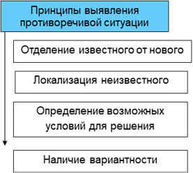
Рисунок 2.1 – Принципы выявления противоречивой ситуации
Принцип отделения известного от нового предполагает определение объективно изменившейся ситуации с объектом исследований.
Принцип локализации неизвестного требуется внимательного осмысления существа изменившейся ситуации.
Возможные условия решения проблем, вызванных изменившейся ситуацией, определяются компетенциями исследователя (знаниями, умениями и навыками).
Принцип вариантности предполагает наличия нескольких вариантов разрешения возникшей проблемной ситуации.
Указанные принципы используются на различных этапах выявления противоречивой ситуации, последовательность которых показана на рисунке 2.2.
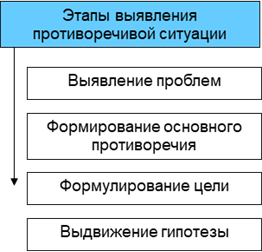
Рисунок 2.2 – Этапы выявления противоречивой ситуации
Научное исследование начинается с определения научного направления исследований, в рамках которого выявляются проблемы. Как правило, проблемы бывают двух типов: проблемы практики и проблемы теории, выявление которых осуществляется в результате информационного поиска.
В научном направлении «Информатика и вычислительная техника» проблемы практики доказывают необходимость автоматизации информационных процессов, а проблемы теории доказывают актуальность разработки информационных систем, обеспечивающих автоматизацию определенных информационных процессов предметной области научных исследований.
Следовательно, между требованиями практики и состоянием теории возникают противоречия. Среди них необходимо выявить основное, которое определит формулировку цели научного исследования.
Для достижения цели необходимо решить ряд задач, часть которых носит научный характер, часть – инженерный. Для их решения выдвигается гипотеза.
На рисунке 2.3 показаны структурные единицы научного направления и постулаты научного исследования.
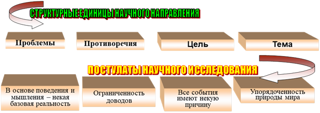
Рисунок 2.3 – Структурные единицы научного направления и постулаты научного исследования
Категории научного исследования
Объект исследования — это явление или процесс, порождающее проблемную ситуацию и взятое исследователем для изучения.
Предмет исследования — это тот аспект проблемы (свойство объекта), исследуя который, познаётся целостный объект, выделяются его главные, наиболее существенные признаки.
Объект и предмет исследования как научные категории соотносятся как общее и частное.
Границы исследования — это налагаемые на предмет исследования ограничения, определяемые одной научной дисциплиной.
Цель научного исследования – получение еще неизвестных знаний о явлении или процессе и дальнейшее полезное использование этих знаний в практической деятельности
Для достижения цели научного исследования ставятся задачи (научные и инженерные) и формулируется гипотеза их решения
Научные исследования носят циклический характер. «Нет законченных исследований, есть законченные исследователи, которым уже не приходят в голову никакие мысли» (Владимир Александров, советский ученый).
Целью информационного поиска является выявление проблем и формирование библиографии научного исследования.
Этапы и источники информации:
– поиск учебных изданий по теме исследования (базовая библиография);
– поиск научных изданий по теме исследования (базовая библиография);
– поиск материалов из периодических изданий (периодическая библиография);
– ознакомление с изданиями, указанными в базовой библиографии, т.е. с учебниками, учебными пособиями, диссертациями, авторефератами, брошюрами и пр.;
– просмотр реферативных журналов по соответствующему разделу науки и техники;
– изучение материалов периодических изданий (статьи в специализированных журналах);
– изучение трудов институтов, тезисов докладов на конференциях.
Информационный поиск целесообразно начинать с использованием Универсального десятичного классификатора (УДК) и Реферативного журнала (РЖ) Всероссийского института научно-технической информации (ВИНИТИ) Российской академии наук (РАН).
УДК имеет следующую цифровую классификацию:
000 – 099 Книги о знаниях, накопленных человечеством; энциклопедии, справочники;
100 – 199 Философия;
200 – 299 Религия;
300 – 399 Социология и экономика;
400 – 499 Языки;
500 –599 Естественные науки
600 – 699 Прикладные науки;
700 –799 Искусство, промыслы, спорт;
800 – 899 Литература
Для магистратуры направления «Информатика и вычислительная техника» наибольший интерес представляет УДК 004. Информационные технологии. Компьютерные технологии. Теория вычислительных машин и систем. Класс включает конструирование, программирование, а также применение вычислительной техники для обеспечения информационных и телекоммуникационных процессов.
Реферативный журнал ВИНИТИ РАН – периодическое научно-информационное издание, в котором публикуются рефераты, аннотации и библиографические описания отечественных и зарубежных публикаций в области естественных, точных и технических наук, экономики и медицины.
Научный профиль (научная специализация) реферативного журнала определяется рубрикатором.
Основные рубрикаторы РЖ, в которых отражаются научные результаты исследований студентов магистерских программ кафедры ПОВТАС:
Автоматика и вычислительная техника. Радиотехника. Связь. Электроника.
Астрономия. Геодезия. Космические исследования.
Бионаноматериалы.
Геофизика.
Геология.
Горное дело
Информатика.
Издательское дело и полиграфия.
Математика.
Вычислительные науки.
Машиностроение
Медицина.
Металлургия. Сварка.
Метрология и измерительная техника
Механика.
Обеспечение безопасности в чрезвычайных ситуациях.
Охрана окружающей среды и природных ресурсов
Транспорт.
Физика.
Химия и химическая технология.
Экономика и управление.
Электротехника.
Энергетика.
Библиография оформляется с учетом требований стандарта предприятия СТО 02069024.101–2015 РАБОТЫ СТУДЕНЧЕСКИЕ. Общие требования и правила оформления, представленного на сайте университета.
1. Законы диалектики.
2. Проблема в широком смысле.
3. Проблемная ситуация в науке.
4. Этапы выявления противоречивой ситуации.
5. Принципы выявления противоречивой ситуации.
6. Задачи достижения цели.
7. Научное направление.
8. Технология формирования темы исследований.
9. Постулаты научного исследования.
10. Методологические основы научного исследования.
11. Объект исследований.
12. Предмет исследований.
13. Границы исследований.
14. Научная гипотеза.
Высокие темпы информатизации различных видов деятельности привели к тому, что появилось противоречие между быстротой освоения работы на компьютере и незначительной эффективностью применения автоматизированных информационных систем (АИС). Одной из причин такого положения является недостаточно целостное формирование системного подхода и управленческой культуры использования автоматизированных систем.
АИС, являясь основным инструментом повышения оперативности и обоснованности управленческих решений, представляют собой сложные программно-аппаратные и коммуникационные комплексы, выступающие в качестве самостоятельного объекта системного анализа. При этом, системный анализ понимается как методология решения проблем, основанная на использовании компьютерных технологий в процессе исследования сложных систем – экономических, технических, программных и т.д.
Любая методология включает в себя понятия, принципы их использования, методы и модели описания объектов, алгоритмы и средства их реализации.
Принципы системного анализа (СА) – это некоторые положения, являющиеся обобщением опыта работы специалиста со сложными системами.
Основные принципы СА:
– принцип конечной цели;
– принцип измерения;
– принцип устойчивости;
– принцип единства;
– принцип связности;
– принцип модульности;
– принцип иерархичности;
– принцип функциональности;
– принцип развития;
– принцип децентрализации;
– принцип неопределенности.
Принцип конечной цели предполагает абсолютный приоритет конечной цели в СА, имеющий несколько правил:
- для проведения СА необходимо в первую очередь сформулировать цель исследования. Расплывчатые, не полностью определенные цели влекут за собой неверные выводы;
- цель функционирования искусственной системы задается, как правило, системой, в которой исследуемая система является составной частью, что позволит определить ее основные существенные свойства, их показатели и критерии оценки;
- при синтезе систем любая попытка изменения или совершенствования системы должна оцениваться относительно того, помогает или мешает она достижению конечной цели.
Принцип связности определяет рассмотрение любой части системы совместно с ее окружением. Подразумевается проведение процедуры выявления связей между элементами системы и выявление связей с внешней средой (учет внешней среды). В соответствии с этим принципом систему в первую очередь следует рассматривать как часть (элемент, подсистему) другой системы, называемой суперсистемой или старшей системой.
Принцип модульного построения. Полезно выделение модулей и рассмотрение системы как совокупности модулей. Принцип указывает на возможность вместо части системы исследовать совокупность ее входных и выходных воздействий (абстрагирование от излишней детализации).
Принцип децентрализации подразумевает сочетание в сложных системах централизованного и децентрализованного управления, которое заключается в том, что степень централизации должна быть минимальной, обеспечивающей выполнение поставленной цели.
Принцип неопределенности подразумевает учет неопределенностей и случайностей в системе. Принцип утверждает, что можно иметь дело с системой, в которой структура, функционирование или внешние воздействия не полностью определены.
Таким образом, указанные принципы СА обладают высокой степенью общности и для непосредственного применения исследователь должен наполнить их конкретным содержанием применительно к предмету исследования.
На рисунке 3.1 показана последовательность действий при возникновении проблем эксплуатации АИС.
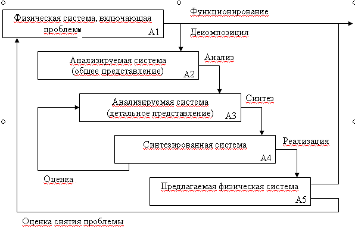
Рисунок 3.1 – Технология решения проблем
Проблемы, возникающие в результате функционирования АИС, подразделяются на:
– организационные (изменение в законодательстве, введение новых стандартов, организационных приказов и распоряжений предприятия на организацию и функционирование инфраструктуры и т.п.);
– технические (совершенствование существующего или установка нового аппаратного и программного обеспечения);
– технологические (увеличение требований к качеству (достоверность принимаемых решений) или эффективности (сокращение времени на принятие решений) обработки информации и т.п.)
Первым шагом решения проблем является представления системы из элементов на определенном уровне детализации (декомпозиции). При этом оценивается качество и эффективность системы в целом, наличие в системе проблем (практических и теоретических). Этот этап является основой системного анализа.
Анализ системы в целом (А1) позволяет выявить противоречие между требованиями практики и состоянием теории, заложенной в существующую АИС и её аналоги.
Следующим шагом СА ставится выявление влияния элементов системы при её детальном представлении на преодоление основного противоречия (А2). Выбор элемента или элементов системы, оказывающих определяющее влияние на качество или эффективность системы в целом, позволяет перейти к синтезу (структурному или параметрическому) новой системы.
Каждый вариант синтезируемой системы подлежит оценке свойств новой АИС (качества или эффективности), либо её элемента. Лучший вариант подлежит реализации (А5).
Предлагаемая физическая система оценивается с точки зрения решения проблем (снятия противоречий) существующей системы.
Элементами системного подхода к научному исследованию (системология) являются процессы декомпозиции, анализа и синтеза, представленные на рисунке 3.2.
Декомпозиция предполагает построение дерева целей или функций проектируемой системы. В проектах программно-информационных систем, как правило, целевая установка одна и, следовательно, строится дерево функций целеполагания, которое является исходным процессом проектирования базы данных АИС.
Обязательным условием системного анализа является отделение элементов системы от внешней среды. Как правило, коммуникационные элементы рассматриваются как элементы передачи информации, работающие без искажения данных, т. е. внешняя среда на каналы связи не влияет.
Фактор – причина, движущая сила какого-либо процесса, определяющая его характер или отдельные его черты. Отсюда, в процессе декомпозиции (см. рисунок 3.2) возникает потребность выявление воздействующих факторов (проблем), создающих проблемную ситуацию, требующую разрешения.
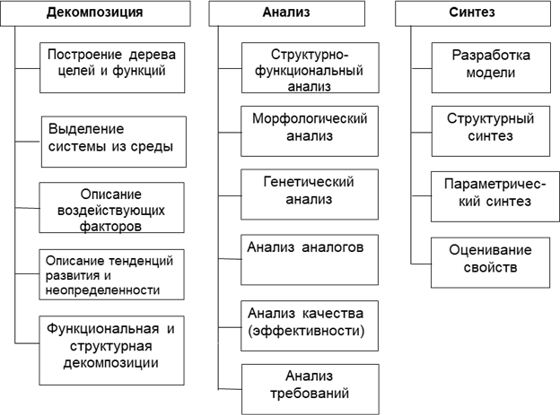
Рисунок 3.2 – Элементы системного подхода к научному исследованию
Функциональная декомпозиция состоит в выделении информационных, управляющих, в том числе оптимизационных и вспомогательных функций, необходимых для достижения целевой функции управления. Функциональная декомпозиция предметной области «Запуск кафе» представлена на рисунке 3.3.
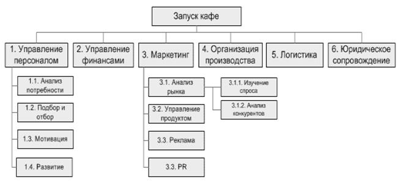
Рисунок 3.3 – Функциональная декомпозиция предметной области «Запуск кафе»
Структурная декомпозиция – общепринятый инструмент представления результатов проекта (см. рисунок 3.4), описывает состав и иерархию элементов системы.
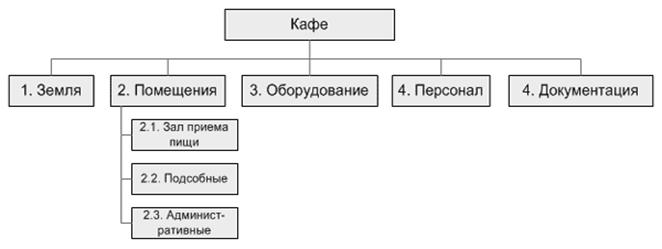
Рисунок 3.4 – Структурная декомпозиция предметной области «Кафе»
Морфологический анализ – это метод исследования возможных решений многомерной, не поддающейся количественной оценке, сложной проблемы.
Генетический анализ – это совокупность методов, направленных на определение наследственной обусловленности признаков, лежащих в основе разнообразия объектов исследования.
Анализ аналогов предполагает выявление существующих АИС, позволяющих автоматизировать выбранные информационные процессы предметной области научных исследований.
Заключительным структурным элементом СА (системного подхода к научному исследованию) является синтез объекта исследований (см. рисунок 3.2), включающий разработку модели объекта исследований, структурный и параметрический синтез объекта, оценку предложенных технических решений для разрешения проблемной ситуации.
Моделированием называют прием познания, позволяющий с помощью одной системы, чаще всего, искусственной воспроизвести в необходимом объеме и с требуемой точностью исследуемые свойства другой более сложной системы, являющейся объектом исследования. Наиболее известной методикой концептуального моделирования сложных систем является методика SADT (Structured Analysis and Design Technique), положенная в основу стандарта IDEF0. IDEF0 — это более четко очерченное представление методики SADT. SADT — методика, рекомендуемая для начальных стадий проектирования сложных искусственных систем.
Структурный синтез заключается в преобразовании модельного описаний исследуемого объекта: исходное описание содержит информацию о требованиях к свойствам объекта, об условиях его функционирования, ограничениях на элементный состав и т.п., а результирующее описание должно содержать сведения о структуре, т.е. о составе элементов и способах их соединения и взаимодействия.
Структура системы – это совокупность устойчивых связей элементов, обеспечивающих его целостность и тождественность самому себе, т.е. сохранение основных свойств при различных внешних и внутренних изменениях. Структурный синтез предполагает построение системы с помощью графического модельного представления, которое начинается с общего обзора и затем детализируется, приобретая иерархическую структуру со все большим числом уровней.
Параметрический синтез заключается в определении параметров элементов выбранной структуры объекта исследования. Как правило, существует большое число критериев, по которым выбираются составляющие систему элементы и их параметры. Таким образом, можно говорить о множественности структур и параметров системы (альтернатив).
Технология системного подхода к анализу проблемной ситуации в предметной области научного исследования (см. рисунок 3.5) базируется на информационном поиске, выполняемом исследователем в выбранной предметной области.
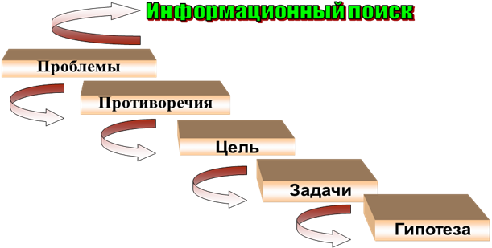
Рисунок 3.5 – Технология системного анализа предметной области исследований
Систематизация результатов информационного поиска (библиография) приводит к выявлению проблем предметной области: проблем практики (объективная реальность) и теории (субъективная реальность), между которыми возникают противоречия.
Проблемы практики выявляются в результате систематизации материалов базовой и периодической библиографии информационного поиска. Систематизация полученной информации доказывает необходимость автоматизации определенных информационных процессов предметной области.
Проблемы теории выявляются в результате поиска аналогов средств автоматизации выбранных для автоматизации информационных процессов предметной области исследований. Отсутствие средств автоматизации требуемых информационных процессов в найденных аналогах свидетельствует о наличии проблем теории построения АИС и доказывает актуальность разработки новых программных компонентов.
Отсюда, между требованиями практики и состоянием теории возникают противоречия (проблемная ситуация), основное из которых определят свойство объекта исследования, требующее совершенствования (улучшения).
Основное из выявленных противоречий позволяет обосновать цель научного исследования. Для направлений «Информатика и вычислительная техника» целями научного исследования становится автоматизация информационных процессов предметной области научных исследований.
Для достижения цели исследователь формулирует задачи, как правило, трех типов: анализ, синтез и оценка предложенных технических решений.
Заключительным этапом системного анализа в научных исследованиях является выдвижение гипотеза решения задач достижения целей исследования. Последующие этапы исследований направлены на доказательство выдвинутой гипотезы.
Наглядным примером выполнения системного анализа информационных процессов предметной области научных исследований является первый раздел диссертационной работы на тему «Теоретико-экспериментальное обоснование системы автоматического выявления угроз безопасности телекоммуникационной сети в условиях параметрической неопределенности информационных процессов».
Предметной областью научных исследований по теме выбрана корпоративная сеть (см. рисунок 3.6) системы электронного документооборота и управления взаимодействием (СЭДУВ) DIRECTUM корпорации «ТНК-ВР» (современная ОАО «Оренбургнефть»), развертыванием и опытной эксплуатацией которой занимались студенты-выпускники кафедры ПОВТАС в 2007 и 2008 годах.
Проблемная ситуация возникла в конце нулевых годов ХХI века в результате отказа ведущих корпораций России, прежде всего топливно-энергетических, от непрофильных видов деятельности (в том числе от поддержки инфраструктуры: каналы передачи данных перешли на телекоммуникационную сеть общего пользования ООО «Волготелеком», программное обеспечение – дочерней компании ООО «ТБинформ»).
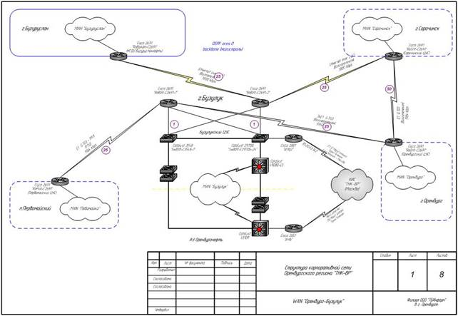
Рисунок 3.6 – Предметная область исследований корпоративной сети
Опытная эксплуатация СЭДУВ DIRECTUM выявила ряд проблем практики автоматизации информационных процессов в объективно создавшейся обстановке:
1. Рост числа субъектов единого информационного поля корпоративного предприятия, имеющего территориально-распределенную структуру и вынужденного использовать для передачи информации телекоммуникационной сети общего пользования (см. рисунок 3.7).
2. Существенное увеличение случаев нарушения информационной безопасности за счет появление новых типов угроз информационной безопасности информационно-телекоммуникационных систем (ИТКС) предприятий, расширение способов их применения, особенно на этапе вторжения (см. рисунок 3.8).
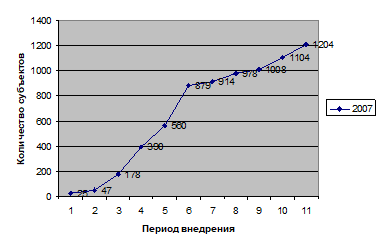
Рисунок 3.7 – Рост числа пользователей СЭДУВ DIRECTUM за 2007 г
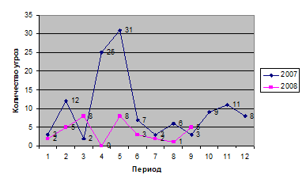
Рисунок 3.8 – Число случаев нарушения политики безопасности СЭДУВ DIRECTUM за 2007-2008 г.г
3. Потери корпораций от несанкционированных воздействий на инфраструктуру корпоративной сети становятся соизмеримы со стоимостью внедрения СЭДУВ DIRECTUM (см. таблицу 3.1).
Таблица 3.1 – Стоимость лицензий, работ по внедрению и техническому сопровождению программного обеспечения существующих АИС-аналогов
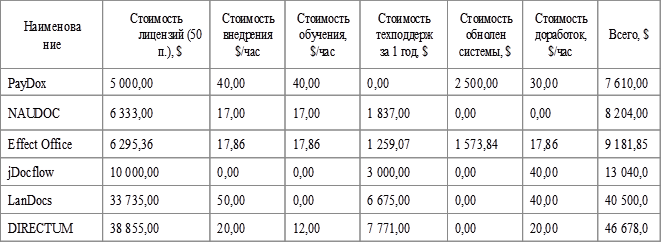
Выявленные проблемы практики (рост уязвимости) доказывают необходимость совершенствования автоматизации информационных процессов защиты (система обеспечения информационной безопасности Snort) инфраструктуры СЭДУВ DIRECTUM.
Низкая эффективность Snort определяется особенностью информационных процессов инфраструктуры телекоммуникационных сети СЭДУВ DIRECTUM (параметрическая неопределенность – нестационарность во времени (см. рисунок 3.9).
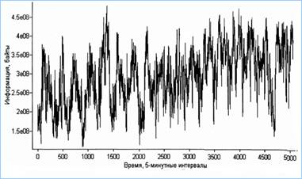
Рисунок 3.9 – Результаты мониторинга информационных процессов на основе трафика сети
Рейтинг аналогов средств защиты информационных процессов телекоммуникационной сети представлен на рисунке 3.10.
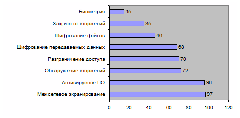
Рисунок 3.10 – Рейтинг аналогов средств информационной безопасности
Основной технологией защиты информации в ИТКС является использование межсетевого экранирования (см. рисунок 3.11)
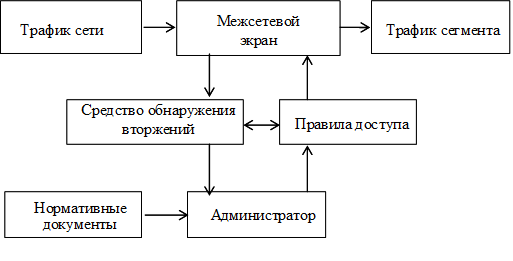
Рисунок 3.11 – Средства и технология управления доступом
Анализ аналогов управления доступом выявил следующие проблемы теории построения средств защиты:
– отсутствие гибких технологий защиты информации ИТКС и адаптивного принятия решений в условиях неопределенности типов информационных атак;
– отсутствие методов адекватного описания нестационарных во времени информационных процессов функционирования сети передачи данных;
– низкая достоверность принимаемых решений средствами обнаружения вторжений, высокая вероятность ложных срабатываний, снижающих пропускную способность сети.
Указанные проблемы теории доказывают актуальность разработки новых средств защиты информации в ИТКС.
Отсюда, возникает противоречия между требованиями практики автоматизации информационных процессов и состоянием теории построения существующих средств защиты ИТКС в предметной области исследований, основным из которых становится противоречие между существенно возросшей уязвимостью инфраструктуры ИТКС и низким уровнем автоматизации обнаружения аномалий информационных процессов сети.
Этот вывод позволяет сформулировать методологические основы научного исследования:
Объект исследования – информационное и программное обеспечение обеспечения безопасности ИТКС корпоративных предприятий;
Предмет – методы, модели и средства выявления вторжений или аномальной активности субъектов ИТКС;
Границы исследований – выявления угроз нарушения безопасности, повышающих интенсивность информационных процессов ИТКС.
Цель настоящего научного исследования – автоматизация выявления вторжений или аномальной активности субъектов телекоммуникационной сети для повышения оперативности и достоверности мониторинга безопасности в условиях параметрической неопределенности информационных процессов и неизвестных типах информационных атак.
Для достижения поставленной цели необходимо решить ряд инженерных и научных задач:
1. Провести системный анализ обеспечения информационной безопасности, учитывающий характерную особенность информационных процессов инфраструктуры ИТКС – параметрическую неопределенность (нестационарность во времени и неоднородность в пространстве субъектов сети).
2. Разработать модель описания информационных процессов ИТКС в условиях параметрической неопределенности для выявления угроз нарушения информационной безопасности на основе метода вейвлет-анализа трафика сети.
3. Разработать методику обнаружения аномальной активности субъектов инфраструктуры телекоммуникационных сетей (обоснование порога аномальной активности субъектов инфраструктуры телекоммуникационных сетей) на основе вейвлет-модели сетевого трафика.
4 Разработать прототип системы автоматического обнаружения угроз информационной безопасности (аномалий) инфраструктуры ИТКС и оценить его эффективность.
Результаты системного анализа позволяют выдвинуть гипотезу решения поставленных задач для достижения цели исследования – построение системы защиты ИТКС на основе межсетевого экрана с двухуровневым контуром управления, представленным на рисунке 3. 12.
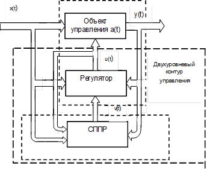
Рисунок 3.12 – Двухконтурная система защиты ИТКС
Контур средств поддержки принятия решений (СППР) обладает гибкой технологией защиты информации на основе адекватного описания нестационарных во времени информационных процессов, обеспечивая высокую достоверность принимаемых решений средствами обнаружения вторжений и низкую вероятность ложных срабатываний, не снижающих пропускную способность ИТКС.
1. Принципы системного анализа.
2. Источники информации для системного анализа.
3. Этапы системного анализа предметной области научного исследования.
4. Технология решения проблем.
5. Структура системного анализа.
6. Технология системного анализа.
7. Декомпозиция это …
8. Технология синтеза объекта исследований.
Концепция – определённый способ понимания, трактовки каких-либо явлений; основная точка зрения, руководящая идея.
Концептуальная постановка задачи исследований – это сформулированный в терминах конкретных дисциплин перечень основных вопросов, интересующих заказчика, а также совокупность гипотез относительно свойств и поведения объекта исследования.
Цели научного исследования формируются как решения, обеспечивающие преодоление противоречий между требованиями практики и состоянием теории автоматизации информационных процессов.
Целеполагания, как правило, ранжируются. Существуют два основных уровня ранжирование целей научных исследований.
1. Целью научного исследования является получение нового знания.
2. Целью научного исследования является представление результата, который отражает разрешение выявленной проблемной ситуации.
К первому уровню относятся открытие принципиально нового, никогда ранее не существовавшего или создание нового на основе нескольких ранее разработанных другими решений.
Ко второму типу целеполагания относятся усовершенствование разработанных другими исследователями решений или адаптация разработанных решений другими исследователями к новым условиям.
Первый уровень целеполагания характерен для докторских и кандидатских исследований. Научные исследования магистров относятся ко второму уровню целеполагания, в которых используются ранее известные подходы к разрешению проблемных ситуаций в других предметных областях, либо в других условиях реализации информационных процессов.
Для достижения поставленной цели необходимо решить ряд исследовательских задач научного или инженерного характера. Исследовательские задачи, характерные для магистерских исследований укрупненной группы направлений 09.00.00 – Информатика и вычислительная техника, подразделяются на аналитические, теоретические, прикладные и экспериментальные.
Аналитические задачи предполагают описание информационных процессов объекта исследования, выявление проблем практики эксплуатации предмета исследований объективного характера, анализ аналогов средств автоматизации информационных процессов, формирование основного противоречия и определение свойства, улучшение которого позволит преодолеть противоречие, сформулировать цель и задачи исследований, выдвинуть гипотезу их решения
Теоретические задачи определяют методы моделирования информационных процессов, в рамках которых выбирается типовая модель, которая затем адаптируется к объекту исследований и разрабатывается методика её использования для достижения цели исследований.
Прикладные задачи носят проектный (инженерный) характер и обеспечивают технические решения построения автоматизированной информационной системы с улучшенным свойством, выбранным для исследования.
Экспериментальные задачи позволяют оценить эффективность (качество) предложенных технических решений и уровень достижения реализованной гипотезы, обеспечившей достижение цели исследований.
Примером концепции целеполагания научных исследований может служить магистерская диссертация на тему «Система контентной фильтрации почтовых сервисов на коллокатов», которая явилась продолжением ранее проведенных исследований (см. лекцию 3) объектом исследования которой осталась СЭДУВ DIRECTUM. Однако предметом исследования становятся методы, модели и средства фильтрации электронной корреспонденции почтовых сервисов корпоративных предприятий.
Особенностью почтовых сервисов корпоративных предприятий с территориально-распределенной структурой (ООО «Оренбургнефть) становятся:
– увеличение количества пользователей e-mail почты информационно-телекоммуникационных систем корпоративных предприятий с территориально-распределенной структурой;
– отказ корпоративных предприятий от ведомственных каналов передачи данных и переход на использование открытых каналов Интернет;
– рост числа спам-рассылок, появление их новых видов с возможностью распространение вредоносных программ, которые приводят к потерям корпораций до $500 млн. в год;
– смена контента электронных сообщений из-за меняющихся информационных потребностей адресатов почтовых сервисов.
СЭДУВ DIRECTUM как объект исследования представлен на рисунке 4.1
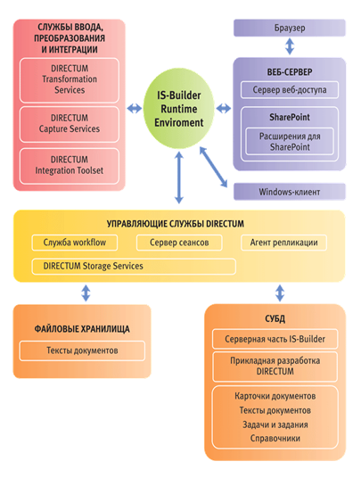
Рисунок 4.1 - СЭДУВ DIRECTUM
Компоненты веб-сервера СЭДУВ DIRECTUM, реализующего почтовые сервисы, как предмет исследований представлен на рисунке 4.2.
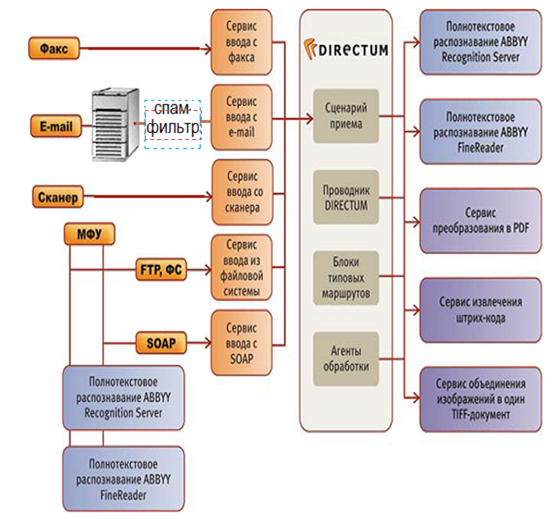
Рисунок 4.2 - Компоненты веб-сервера СЭДУВ DIRECTUM
Особенностями эксплуатации почтовых сервисов корпоративных предприятий с территориально-распределенной структурой (проблемы практики), связанные с отказом корпораций от непрофильных видов деятельности, следующие:
– увеличение количества пользователей e-mail почты ИТКС;
– отказ корпоративных предприятий от ведомственных каналов передачи данных и переход на использование открытых каналов Интернет;
– рост числа спам-рассылок (ненужные адресату электронные послания, рекламные письма), появление их новых видов с возможностью распространение вредоносных программ, которые приводят к потерям корпораций до $500 млн. в год;
– смена контента электронных сообщений из-за меняющихся информационных потребностей адресатов почтовых сервисов.
Указанные проблемы практики доказывают необходимость автоматизации дополнительной защиты почтовых сервисов существующих ИТКС корпоративных предприятий с территориально-распределенной структурой, прежде всего касающиеся спам-рассылок.
Анализ аналогов почтовых сервисов (Mail.com (см. рисунок 4.3), Yahoo! (см. рисунок 4.4), MS Outlook и др.) имеют ряд проблем теории, связанных с необходимостью фильтрации спам-рассылок.
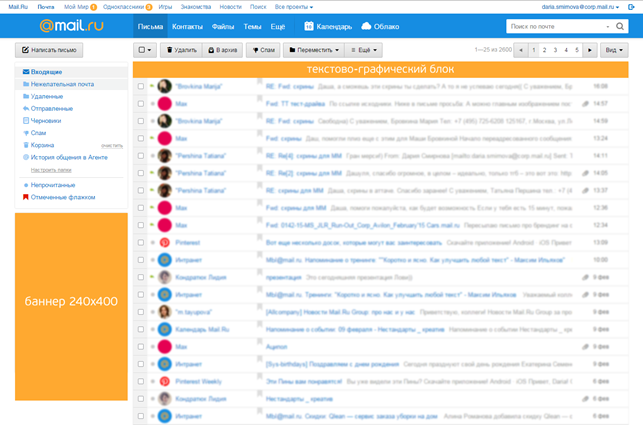
Рисунок 4.3 – Интерфейс почтовый сервис Mail.com
Рисунок 4.4 – Интерфейс почтового сервиса Yahoo!
К основным проблемам теории спам-фильтрации отнесены:
– методы фильтрации почтовых сервисов базируются на статистической обработке электронных сообщений, что не в полной мере учитывает их семантическое содержание;
– модели электронных сообщений отражают признаки несанкционированной рассылки и не учитывают содержание легитимных сообщений, что приводит к их ложной классификации;
– алгоритмы спам-фильтрации требуют существенных ресурсов, что снижает производительность почтовых сервисов.
Указанные проблемы теории доказывают актуальность автоматизации спам-фильтрации почтовых сервисов существующих ИТКС корпоративных предприятий с территориально-распределенной структурой.
Между требованиями практики и состоянием теории спам-фильтрации возникает противоречие, основным из которых становится противоречие между существенно возросшей интенсивностью спам-рассылок и высоком уровне ложной классификации легитимной почтовой корреспонденции в силу отсутствия методов, учитывающих признаки легитимности сообщений при изменяющихся информационных потребностях адресатов.
Для преодоления основного противоречия сформулирована цель исследований: автоматизация информационных процессов семантической подготовки электронных сообщений к интеллектуальной фильтрации для обеспечения требуемой достоверности идентификации легитимной почтовой корреспонденции.
Для достижения цели исследований (преодоления основного противоречия) необходимо решить следующие задачи:
1. Провести системный анализ особенностей спам-фильтрации почтовых сервисов ИТКС корпоративных предприятий с территориально-распределенной структурой.
2. Разработать модели электронного сообщения на основе устойчивых словосочетаний, обеспечивающая сокращение пространства признаков для повышения достоверности классификации.
3. Разработать методику и алгоритмы нейросетевой классификации электронной корреспонденции, обеспечивающих контентную фильтрацию лигитимных сообщений почтовых сервисов в реальном масштабе времени.
4. Разработать прототип системы контентной фильтрации электронной корреспонденции, адаптивный к изменению содержания легитимных сообщений.
5. Экспериментально исследовать разработанный прототип и оценки его эффективность.
Таким образом, описан ИТКС корпоративных предприятий с территориально-распределенной структурой как предмет исследований, доказаны необходимость и актуальность защиты объекта от спам-рассылок, сформулировано основное противоречие, позволившее обосновать цель исследований.
Гипотеза – обоснованное предположение, требующее проверки.
Научная гипотеза – это предположительное знание, истинность или ложность которого ещё не доказана.
Методика формирования научной гипотезы представлена на рисунке 4.5.
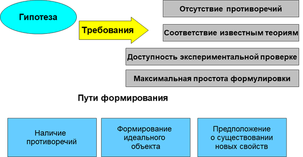
Рисунок 4.5 – Методика выдвижения научной гипотезы достижения цели исследований
Целевая функция (в широком смысле) есть математическое выражение некоторого критерия качества одного объекта (решения, процесса) в сравнении с другим.
В научных исследованиях целевая функция – математическая зависимость, связывающая цель (оптимизируемую переменную) с управляемыми переменными.
Для построения целевой функции необходимо задать:
1. Допустимое множество элементов решений (альтернатив)
2. Критерий и ограничения
где: Y = y1, y2, … ym) – множество признаков решения,
yjдоп – заданные условия (ограничения), допустимые решения.
3. Признак opt (max или min).
Системный анализ информационных процессов предметной области научных исследований на основе результатов информационного поиска (библиографии) позволяет выбрать (см. рисунок 4.6) метод борьбы с несанкционированными электронными сообщениями (НЭС) – спам-рассылками – фильтрацию по содержимому, средство фильтрации – нейросеть, построенную на основе алгоритмов машинного обучения.
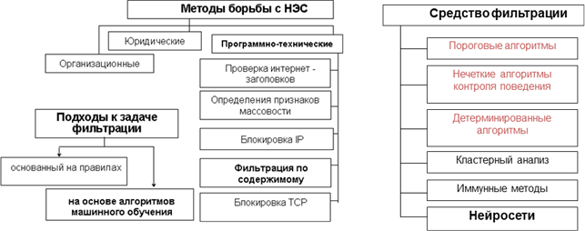
Рисунок 4.6 – Выбор метода, средства фильтрации спам-рассылок и подхода к обучению
Для обеспечения требуемой достоверности идентификации легитимной почтовой корреспонденции (особенность постановки цели исследований) предполагается предварительная подготовка электронных сообщений к нейросетевой фильтрации, представленной на рисунке 4.7.
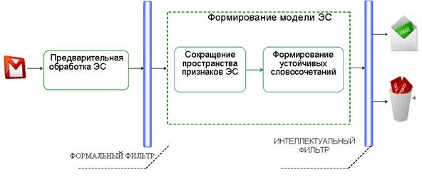
Рисунок 4.7 – Предварительная подготовка электронного сообщения (ЭС) к нейросетевой фильтрации
Тогда цель научного исследования можно формализовать в виде целевой функции:
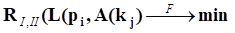
где: RI,II – ошибки распознавания первого или второго типа;
LÎ{Leti} – множество писем (ЭС), подготовленных к фильтрации;
Р = (р1, р2, р3,….рl) пространство признаков фильтрации классов ЭС L;
А – алгоритмы нейросетевой фильтрации классов ЭС L KÎ{k1, k2}, (spam/legitim).
Таким образом, выдвинута гипотеза достижения цели научных исследований в предметной области защиты информационных процессов от несанкционированных электронных сообщений в почтовых сервисах ИТКС.
1. Основное содержание аналитического этапа научного исследования.
2. Методика формирования противоречий, цели и задач научного исследования.
3. Концептуальная постановка задачи исследований.
4. Методика написания и оформления научной статьи.
5. Базовая библиография.
6. Периодическая библиография.
Вторым разделом научных исследований, как правило, является теоретический раздел, основным содержанием которого в магистерских диссертациях становится моделирование объекта исследований – компонентов автоматизированных информационных систем.
Концепция – определённый способ понимания, трактовки каких-либо явлений; основная точка зрения, руководящая идея.
Технология принятия решений в автоматизированных информационных системах (АИС) со средствами принятия решений (СППР) представлена на рисунке 5.1.
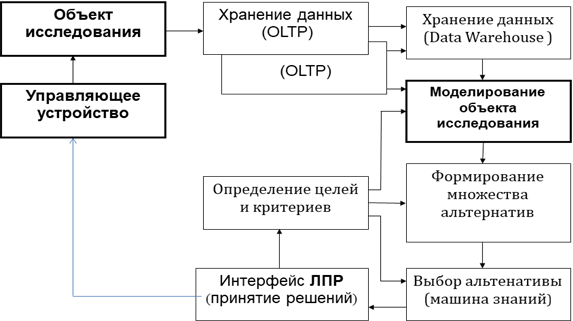
Рисунок 5.1 – Технология принятия решений в АИС с СППР
Основными элементами АИС являются объект исследований и управляющее устройства, в котором заложены алгоритмы управления объектом, обеспечивающие достижения цели. Объект управления может иметь любую природу – технические, социальные и др. Остальные компоненты технологического процесса реализую поддержку решений в различных ситуациях, определяемых внешней средой. Центральным процессом поддержки решений становится моделирование объекта исследования.
Моделированием называют прием познания, позволяющий с помощью одной системы, чаще всего, искусственной воспроизвести в необходимом объеме и с требуемой точностью исследуемые свойства другой более сложной системы, являющейся объектом исследования.
С другой стороны, моделирование - особая форма научного эксперимента. Отсюда, модель - физическая или абстрактная система, воспроизводящая объект исследования и удобная для проведения экспериментов.
Целями моделирования могут быть:
– получение функциональных зависимостей между переменными модели;
– идентификация состояния исследуемого объекта;
– оптимизация и выбор целевой функции;
– обоснование достоверности математического описания объекта;
– сравнение стратегий поведения сторон в конфликтных ситуациях;
– применение модели для обучения и тренировок.
Для адекватного описания модели объекта исследования должны соблюдаться следующие принципы.
Информационной достаточности. Существует некоторый критический уровень априорных сведений об объекте, при достижении которого может быть построена ее модель.
Осуществимость. Задаётся пороговое значение вероятности достижения цели моделирования, граница времени её достижения.
Агрегирования. Сложная система состоит из подсистем, для описания которых пригодны стандартные математические схемы (зависимости).
Параметризации. Подсистемы можно заменять в модели соответствующими числовыми величинами или зависимостями в виде таблицы, графика или аналитического выражения.
Множественности моделей (ключевой). Необходим ряд моделей, позволяющих с разных сторон и с разной степенью детальности отражать изучаемый объект. Одна модель – одно свойство объекта исследований.
В соответствии с ключевым принципом на рисунке 5.2 представлены свойства сложных АИС, которые могут быть основополагающими (критическими) в магистерских исследованиях.
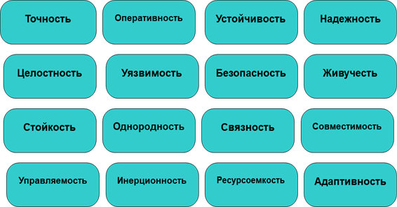
Рисунок 5.2 – Основные свойства сложных АИС и процессов
Построение модели начинается с изучения объекта и выдвижения гипотезы о характере его свойств на основе ограниченных сведений и некоторых догадках.
Для этого анализируются объекты-аналоги, из них выбирается прототип, наиболее близкий аналог объекта, исследование свойств которого доступно.
В результате анализа прототипа создается некоторая логическая схема, позволяющая провести эксперимент и уточнить свойства объекта.
Такую логическую схему также называют моделью объекта.
При сходстве описания модели и объекта, т.е. при условии их подобия (адекватности), результаты исследования свойств модели можно перенести на объект.
Этапы моделирования:
– выявление критических свойств исследуемого объекта;
– определение признаков свойств, их метрик и характеристик оценивания,
– построение модели объекта;
– определение поведения исследуемой модели объекта.
На рисунке 5.3 представлена краткая классификация моделей.
Рисунок 5.3 – Классификация моделей систем
Ярким примером моделирования может служить физическое моделирование, которое предполагает, что моделью является либо сама исследуемая система, либо другая система с той же или подобной физической природой.
На рисунке 5.4 представлены два объекта исследований различной физической природы (механический маятник и колебательный контур), которые описываются дифференциальным уравнением 2-го порядка
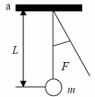 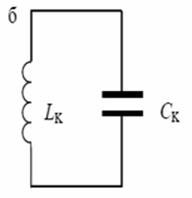
Рисунок 5.4 – Механический маятник и колебательный контур
Обобщенная модель этих объектов имеет вид
,
где: z (t) – состояние системы (F – сила тяжести, g – заряд конденсатора);
x (t) – входное воздействие (отклонение маятника, подведенная электрическая энергия);
h0, h1, h2 – параметры системы (Т - период собственных колебаний, w - частота колебаний маятника, R – активное сопротивление контура, С – ёмкость конденсатора, L – индуктивность катушки).
Следовательно, рассмотренные механические и электрические процессы математически полностью подобны, что позволяет процессы (свойства) механического маятника исследовать на основе колебательного контура и наоборот.
Под математическим моделированием понимается процесс установления соответствия реального объекта некоторой математической зависимости и её исследование, позволяющее получить количественные признаки свойств реального объекта.
Математическая модель приближенно описывает реальный процесс, явление или объект с помощью математических соотношений, которые представляют собой системы дифференциальных уравнений (обыкновенных или в частных производных), алгебраических уравнений, разностные уравнения, линейные, нелинейные уравнения, системы уравнений и т.д.
На рисунке 5.5 представлена математическая модель, связывающая входное воздействие x(t) c выходным сигналом y(t).
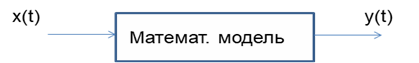
Рисунок 5.5 – Схема математической модели объекта
Эту связь можно описать неоднородным дифференциальным уравнением (НДУ) вида
.
Исследование математических моделей, описываемых неоднородными дифференциальными уравнениями, является сложной задачей и для их решений используются методы аналитического (АМ) и компьютерного моделирования (КМ).
Для аналитического моделирования характерно то, что процесс функционирования элементов системы записывается в виде некоторых математических соотношений (дифференциальных, интегральных, алгебраических, разностных и т.д.) на основе математики или законов математической физики (пример – закон сохранения) и системы ограничений.
Аналитическая модель может быть получена:
- аналитически, когда стремятся получить явные зависимости между признаками искомых свойств объекта;
- численно, когда, не умея решать уравнения, стремятся получить результаты при конкретных исходных данных (начальных условиях);
- качественно, когда, не имея решения в явном виде, можно найти некоторые свойства решения (например, оценить устойчивость систем).
Пример кинематической модели двухклетевого прокатного стана на основе закон сохранения энергии представлен на рисунке 5.6.
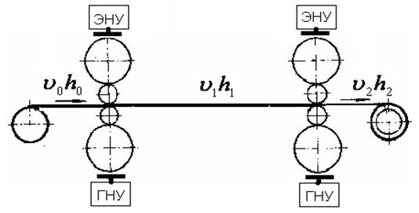
Рисунок 5.6 – Кинематическая модель двухклетевого прокатного стана
Кинематическая модель двухклетевого прокатного стана строится и исследуется на основе закона сохранения энергии с учетом неизменности толщины проката .
На рисунке 5.7 показаны аналитические методы познания, на основе которых строятся математические модели для исследования сложных объектов.
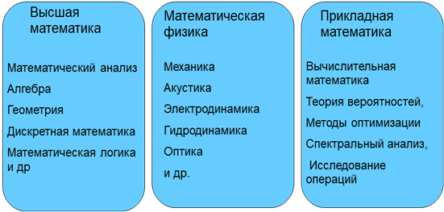
Рисунок 5.7 – Аналитические методы познания
В рамках указанных групп разработаны типовые математические модели, которые широко используются для описания информационных процессов в автоматизированных системах. Поэтому первым шагом теоретического раздела магистерской работы будет выбор метода моделирования объекта исследований, в рамках которого выбирается типовая модель и дальнейшая задача исследователя будет состоять в адаптации типовой модели к предмету исследования.
Таким образом, основой теоретического этапа моделирование становится моделирование объекта исследований.
При компьютерном моделировании математическая модель объекта исследования представлена в виде программы на ЭВМ (компьютерной модели), позволяющей проводить вычислительные эксперименты: численные, имитационные, статистические.
При численном моделировании для построения компьютерной модели используются методы вычислительной математики, а вычислительный эксперимент заключается в численном решении математических уравнений при заданных значениях параметров процесса и начальных условиях (однородные и неоднородные дифференциальные уравнения и т.д.).
Имитационное моделирование – вид компьютерного моделирования, для которого характерно воспроизведение на ЭВМ процесса функционирования (имитация) исследуемого объекта. При этом имитируются элементарные явления, составляющие процесс, с сохранением их логической структуры, последовательности протекания во времени, что позволяет получить информацию о состоянии системы в определенные моменты времени.
Примером реализации теоретического этапа научного исследования является второй этап работы «Теоретико-экспериментальное обоснование адаптивной к поверхностным дефектам системы управления технологическим процессом холодного тонколистового проката».
Проблемная ситуация в предметной области вызвана необходимостью получения тонколистового проката (см. рисунок 5.6) сверх проектных решений прокатного стана (требуемая толщина проката 0,12 мм, проектная – 0,45), в результате чего на прокате возникают поверхностные дефекты (вмятины, волны, изгибы, разрывы листа и т.д.).
Автоматизированная система управления технологическим процессом (АСУТП) проката имеет сложную структуру, которая представлена на рисунке 5.8. Исследование подобных структур базируется на основе имитации работы элементов системы с использованием инструментальных сред компьютерного моделирования MathLab, MathСad, GPSS и др.
Результаты имитационного моделирования позволяют исследовать требуемые свойства элементов АСУТП стана холодного проката (систему автоматического регулирования толщины полосы (САРТ) с цепью компенсации динамической ошибки (ЦКО) и программно-аппаратную систему идентификации поверхностных дефектов (ПАС)).
Имитационная модель двухклетевого прокатного стана в среде MathLab показана на рисунке 5.9.
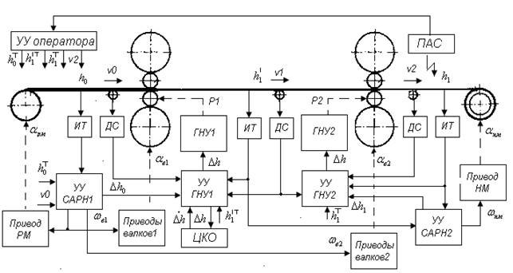
Рисунок 5.8 – Структура АСУТП листового проката
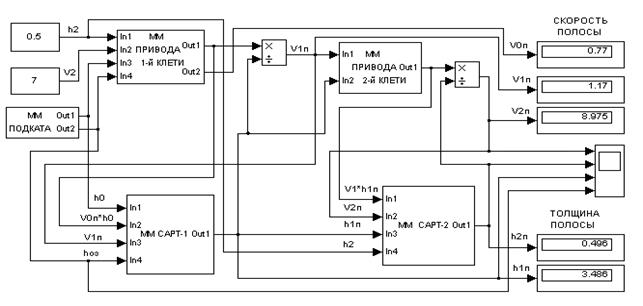
Рисунок 5.8 – Имитационная модель двухклетевого прокатного стана
Модель проката (заготовки) имитируется математической зависимостью
в виде имитационной модели (см. рисунок 5.9).
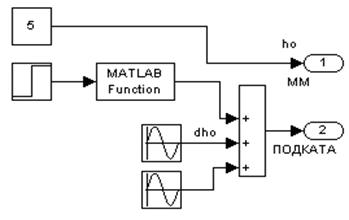
Рисунок 5.9 – Имитационная модель подката (заготовки)
Имитационная модель САРТ представлена на рисунке 5.10.
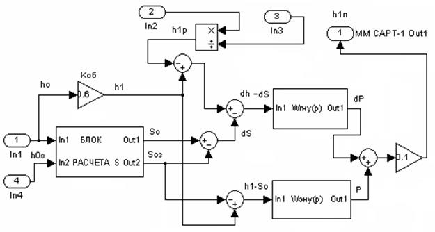
Рисунок 5.10 – Математическая модель САРТ
Результаты имитационного моделирования изменения толщины тонколистового проката до и после введения системы компьютерного зрения и изменения входных параметров проката показана на рисунке 5.11.
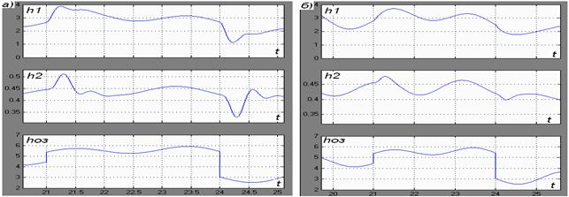
Рисунок 5.11 – Результаты имитационного моделирования толщины проката
Таким образом, компьютерная имитации работы элементов прокатного стана и заготовки проката позволяют исследовать свойства готовой продукции при изменении требований выше проектных решений.
1. Основное содержание теоретического этапа научного исследования
2. Методы научного исследования
3. Понятия модели
4. Содержание моделирования
5. Цели моделирования
6. Принципы моделирования
7. С чего начинается построение модели?
8. Технология моделирования
9. Классификация моделей
10. Физическое моделирование
11. Математическое моделирование
12. Аналитическое моделирование
13. Имитационное моделирование
Можно рекомендовать следующую технологию теоретических исследований магистров всех направлений укрупненной группы «Информатика и вычислительная техника»:
– выбор метода моделирования и типовой модели описания информационных процессов объекта исследований;
– адаптация типовой модели к предметной области научных исследований;
– разработка методики использования модели для достижения цели исследования;
– алгоритмизация аппарата моделирования.
Основой выбора метода моделирования объекта исследования являются методы научного познания. На рисунке 6.1 представлены методы научного познания, определяющие классификацию моделирующего аппарата научного исследования.
Рисунок 6.1 – Методы научного познания
К всеобщим методам научного познания относятся:
Анализ — метод исследования, характеризующийся выделением и изучением отдельных частей (свойств) объектов исследования.
Синтез – процесс объединения ранее разрозненных объектов или понятий в целое и исследование его свойств целого.
Аналогия – отношение сходства между объектами, вывод о свойствах одного объекта по его сходству с другими объектами.
Моделирование – прием познания, позволяющий с помощью одной искусственной системы воспроизвести в необходимом объеме и с требуемой точностью исследуемые свойства другой более сложной системы, являющейся объектом исследования.
Теоретические методы научного познания включают:
Абстрагирование – (от лат. abstractio – отвлечение) исключение учета свойств и признаков изучаемого предмета ради выявления какого-либо определённого его свойства.
Идеализация – (лат. idealis – образ), мысленное, абстрактное воссоздание изучаемых предметов, которые в действительности не могут быть воспроизведены.
Формализация – (от лат. forma – вид, образ) знаковая, символическая система отражения знаний.
Индукция – (от лат. inductio – наведение) переход от изучения отдельных частей к изучению целого, от частного — к общему.
Дедукция – (от лат. deductio – выведение) получение нового знания на основе нескольких других утверждений об изучаемом предмете, от общего к частному.
К эмпирическим методам научного познания относятся:
Наблюдение – целенаправленное изучение предметов, опирающееся на данные органов чувств (ощущения, восприятия, представления). Наблюдение может быть непосредственным и опосредованным (различными приборами и устройствами)
Эксперимент (лат. experimentum – опыт, проба) – активное и целенаправленное вмешательство в протекание изучаемого процесса, соответствующее изменение объекта или его воспроизведение в специально созданных и контролируемых условиях.
Измерение – совокупность действий, выполняемых при помощи определенных средств с целью нахождения числового значения измеряемой величины в принятых единицах измерения.
По способу получения результатов различают измерения прямые и косвенные. В прямых измерениях искомое значение измеряемой величины получается путем непосредственного сравнения ее с эталоном или выдается измерительным прибором. При косвенном измерении искомую величину определяют на основании известной математической зависимости между этой величиной и другими величинами, получаемыми путем прямых измерений
Указанные методы позволяют решить типовые задачи моделирования, используемые в приложениях программно-информационных систем:
Классификация – отнесение объектов (наблюдений, событий) к одному из заранее известных классов;
Кластеризация – группировка объектов (наблюдений, событий) на основе данных (признаков свойств), описывающих их сущность. Объекты внутри кластера должны быть похожими друг на друга и отличаться от объектов, вошедших в другие кластеры;
Прогнозирование – установление функциональной зависимости между зависимыми и независимыми перемененными;
Идентификация — установление тождественности неизвестного объекта известному на основании совпадения признаков; распознание.
Ассоциация – выявление закономерностей между связанными событиями (высокая вероятность связи событий друг с другом). Примером такой закономерности служит правило, указывающее, что из события X следует событие Y. При этом используются последовательные шаблоны (установление закономерностей между связанными во времени событиями). Например, после события X через определенное время произойдет событие Y. Другой задачей ассоциации является анализ отклонений (выявление наиболее нехарактерных шаблонов).
К типовым моделям, указанных методов для решения типовых задач, относятся:
- модели векторной оптимизации основаны на использовании функции свертки, т.е. многопараметрический вектор, выраженный через частные показатели (признаки) свойств объекта исследования, заменяется скалярной величиной;
- модели теории статистических решений основаны на использовании законов математической статистики: проверка статистических гипотез, корреляционной и регрессионный анализ, скрытые классификации и идентификация систем (процессов);
- интеллектуальные модели (инженерия знаний) основаны на построении семиотических моделей описания систем (процессов). В таких моделях система предпочтении ЛПР формализуется в виде набора логических правил, по которым может осуществляться выбор альтернатив.
Примером выбора метода моделирования и типовой модели описания информационных процессов может служить теоретический раздел магистерской диссертации на тему «Система контентной фильтрации почтовых сервисов на основе коллокатов», объектом исследования которой является семантическое (смысловое) описание текста в задаче классификации электронных почтовых сообщений на легитимную почту и спам (электронная рассылка несанкционированных коммерческих сообщений (НЭС)).
В результате информационного поиска и изучения базовой библиографии по теории моделирования текстовой информации выбраны два метода описания электронного сообщения: метод компонентного анализа текста, в основе которого модель виде графа, и метод тематической классификации на основе векторной модели.
На рисунке 6.2 представлены типовые модели для семантического описания электронного документа D на основе аналитического метода моделирования (векторное (алгебра) описание текста и описание текста в виде графа (дискретная математика)). В обоих случаях используются матричные преобразования электронного документа D. Исследования ограничений использования предложенных моделей семантического описания текста выявлено преимущество векторного описания по быстродействию алгоритмов и размерности базы термов построения сложного текста.
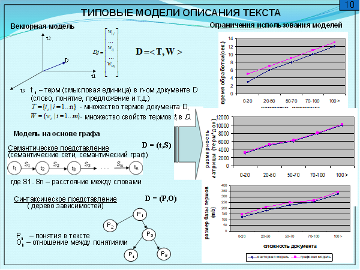
Рисунок 6.2 – Методы и типовые модели семантического описания текстовой информации
Таким образом, выбирается аналитический метод моделирования и типовая модель семантического описания электронного текстового сообщения в виде вектора. На следующем этапе необходимо адаптировать типовую модель к предметной области научного исследования.
Развитие типовой модели связано с адаптацией к предметной области научных исследований.
Адаптация (самоприспособление) – процесс изменения алгоритма функционирования и (или) структуры реализации объекта исследования с целью сохранения его состояния при изменении внешних условий
На рисунке 6.3 представлены этапы адаптации различных компонентов принятия решений в программно-информационных систем (ПИС).
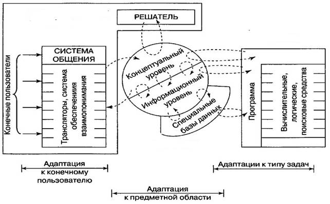
Рисунок 6.3 – Адаптации компонентов ПИС
Адаптация типовой модели включает адаптацию к предметной области, к конечному пользователю и к типу решаемых задач на концептуальном и информационном уровнях.
Концептуальный уровень должен ориентировать типовую модель на определенную область применения (производство, научные исследования, проектирование, обучение и т.д.). Информационный уровень определяет развитие типовой модели решения информационных задач предметной области посредством специальных баз данных.
Адаптация системы общения к конечным пользователям предполагает разработку адаптированного интерфейса, учитывающего интересы конкретных пользователей, и поэтому в рассматриваемом примере не исследуются.
Адаптация к типу задач аналитического приложения определяется целью проекта научного исследования. В рассматриваемом примере цель определена – интеллектуальная фильтрация ЭС легитимной почтовой корреспонденции, поэтому множество задач (прогнозирование, идентификация, кластеризация и др. не рассматривается.
Развитие типовой матричной модели электронного сообщения (ЭС) к предметной области начинается с определения пространства признаков, характеризующих объект исследования (ЭС), и метрик этих признаков (рисунок 6.4).
а)
б)
Рисунок 6.4 – Пространство признаков (а) и их метрики (б) для электронного сообщения почтовой корреспонденции
где: fij – частота слов (термов) i в электронном сообщении j;
M – общее число сообщений в выборке;
N – число термов в выборке после удаления стоп-слов;
Mj – общее число сообщений, содержащих терм tj.
Тогда модель почтового ЭС S примет вид множества
S(рi)=<ti,w(ti)>,
где: ti – i-ый терм (смысловая единица – слово, словосочетание и др.) в сообщении;
рi – пространство признаков сообщения;
w(ti) – вес терма в сообщении после удаления стоп-слов.
Таким образом, предложенная модель электронного сообщения адаптирована к описанию текстовой информации почтовой корреспонденции.
В самом общем случае модель ЭС S в матричной форме записи (матрица значимости) примет вид
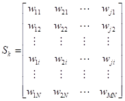 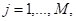 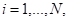
где: Sk – модель класса k (spam/legitim);
wij – вес терма i в ЭС j;
N – число термов в ЭС;
М – число ЭС в классе.
Размерность матрицы значимости M×N определяет сложность алгоритма обработки данных и поэтому требует сокращения.
На рисунке 6.5 представлена методика сокращения матрицы значимости на основе мер близости термов и смысловой значимости устойчивых словосочетаний.
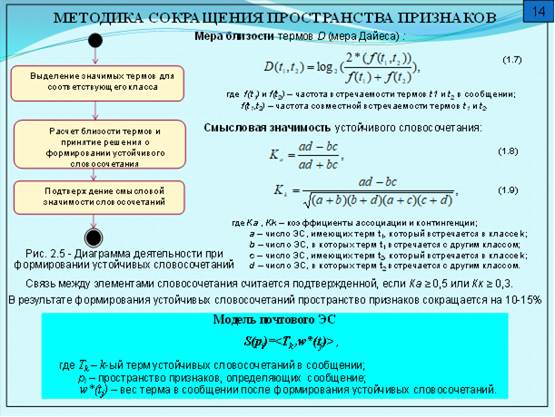
Рисунок 6.5 – Методика сокращения пространства признаков
Таким образом, предложена методика использования модели смыслового описания текстовой информации, адаптированной к предметной области фильтрации легитимной электронной почтовой корреспонденции.
Заключительный этап теоретического раздела магистерской диссертации включает алгоритмизацию предложенного аппарата моделирования. Для задачи фильтрации легитимной почтовой корреспонденции выбран алгоритм нейросетевой классификации АРТ-2а, модифицированный к виду, представленный на рисунке 6.6.
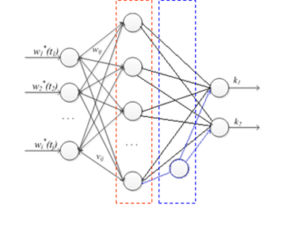
Рисунок 6.6 – Модифицированный классификатор ART 2а
Модификация классического алгоритма нейросетевой классификации заключается в добавлении одного внутреннего слоя с одним нейроном, решающим задачу бинарной классификации (k1 – легитимное сообщение, k2 – spam) с учетом ключевого словосочетания, построенного на основе расчета меры Дайеса D
где: f(t1) и f(t2) – частота встречаемости термов t1 и t2 в сообщении;
f(t1,t2) – частота совместной встречаемости термов t1 и t2.
И коэффициентов: ассоциации Ка и контингенции Кk, определяющих смысловую значимость устойчивого словосочетания
где: Ка, Кk – коэффициенты ассоциации и контингенции;
а – число ЭС, имеющих терм t1, который встречается в классе k;
b – число ЭС, в которых терм t1 встречается с другим классом;
с – число ЭС, имеющих терм t2, который встречается в классе k;
d – число ЭС, в которых терм t2 встречается с другим классом.
Модифицированный алгоритм нейросетевой классификации на основе устойчивых словосочетаний представлен на рисунке 6.7.
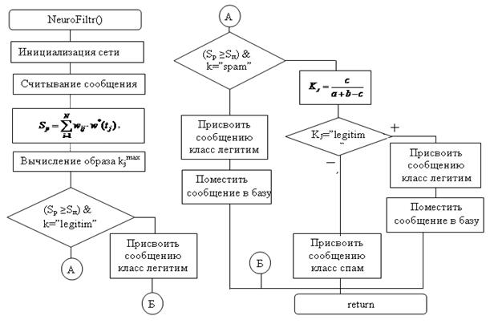
Рисунок 6.7 – Модифицированный алгоритм нейросетевой классификации
Таким образом, в результате формирования устойчивых словосочетаний пространство признаков классификации электронной почтовой корреспонденции сокращается на 10 -15% и более (объем текста).
1. Перечислить общие методы научного познания.
2. Какие методы познания относятся к теоретическим.
3. Перечислите методы эмпирического познания.
4. Какие типовые задачи моделирования относятся к задачам научного исследования.
5. Задачи определения скрытых закономерностей в структурах данных.
6. Суть задачи классификации.
7. Суть задачи кластеризации.
8. Суть задачи идентификации.
9. Метод решения задачи прогнозирования.
В основе проектного (специального) раздела магистерской диссертации лежит разработка (проектирование и реализация) автоматизированной информационной системы.
В соответствии с ГОСТ 34.003-90 «Автоматизированные системы Термины и определения» автоматизированная система (АС) – система, состоящая из персонала и комплекса средств автоматизации его деятельности, реализующая информационную технологию выполнения установленных функций.
В зависимости от вида деятельности выделяют АС: автоматизированные системы управления (АСУ), системы автоматизированного проектирования (САПР), автоматизированные системы научных исследований (АСНИ) и др. В зависимости от вида управляемого объекта (процесса) АСУ делят АСУ технологическими процессами (АСУТП), АСУ предприятиями (АСУП), и т.д.
Современная АСУ – автоматизированная информационная система (АИС) со средствами поддержки принятия решений (СППР).
Программная архитектура представляет собой совокупность моделей структурных компонентов системы с видимыми извне признаками свойств и механизмами их взаимодействия.
АИС со средствами поддержки принятия решений (см. рисунок 7.1) является основным инструментом повышения оперативности и обоснованности управленческих решений.
Современная АСУ имеет два контура управления, основной и контур поддержки принятия решений.
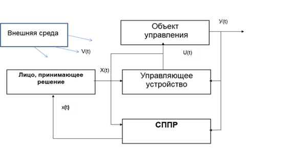
Рисунок 7.1 – Архитектура современной АСУ
Основной контур – объект автоматизированного управления (объект исследования) может быть любой природы (технический, социальный, экономический и др.) и управляющее устройство, в которое заложен требуемый алгоритм управления объектом. Состояние объекта управление оценивается множеством показателей (признаков)
Y(t)=<y1(t),y2(t),…ym(t),>,
где t - текущее время.
Управляющее устройство по целевому сигналу X(t) (целеполагание) формирует управляющее воздействие U(t), изменяющее состояние объекта управления по заданному закону (алгоритму).
Однако на все элементы основного контура воздействует внешняя среда (множество V(t)), случайным образом изменяя состояние (поведение) объекта управления. Для устранения влияние внешней среды на основной контур управления предназначен дополнительный контур – контур СППР.
Обобщенная структура АСУ со средствами принятия решений представлена на рисунке 7.2.
Рисунок 7.2 – Структура АСУ со средствами принятия решений
В контур СППР входит информационное обеспечение, состоящее из транзакционных баз данных и/или хранилища данных, и программное обеспечение, в составе модели объекта исследований, базы альтернатив, машины знаний и интерфейса лица, принимающего решения, обеспечивающего требуемое управление объектом.
Проектные решение магистерской диссертации предполагают разработку компонентов СППР, изображенных на рисунке 7.3.
Источники данных имитируют динамику изменения состояние реального объекта исследование (управления) с учетом случайных воздействий V(t)) внешней среды. Информация о состоянии объекта сохраняется в трансзакционной базе данных и обновляется с заданным интервалом времени. Динамика изменения данных о состоянии объекта управления во времени Y(t) сохраняется в хранилище данных.
Рисунок 7.3 – Проектируемые компоненты СППР
Модель объекта управления воспринимает показатели (признаки) состояния реального объекта Y(t) и преобразует их в соответствии с требуемым законом функционирования (алгоритма управления). При этом формируются модельные показатели состояния Y*(t), в которое нужно перевести объект управления с целью коррекции его состояния после воздействия внешней среды. Y*(t) характеризует альтернативу решения в зависимости от цели коррекции состояния модели объекта Х(t). Каждая альтернатива решения имеет детерминированную и случайную составляющие y*(t)= yд* + yc*. Множество решений хранится в базе альтернатив.
Выбор рекомендуемой альтернативы определяется по критерию K(ai) = opt, записанному в виде правил базы знаний. Критерии формирует ЛПР через свой интерфейс.
Следовательно, для разработки архитектуры проекта магистерских исследований технологию принятия решений можно представить в виде, изображенном на рисунке 7.4.
Рисунок 7.4 – Технология поддержки принятия решений
Для описания информационных процессов используются специальные языки моделирования, компонентами которых являются:
- концепции - теоретические основы языка моделирования;
- нотации - система условных обозначений:
- словарь (алфавит, множество символов, используемых для представления понятий и их взаимоотношений);
- синтаксис (правила применения элементов словаря (алфавита);
- семантика (значения (точные и однозначные) элементов словаря (алфавита);
- процедуры - правила практического применения нотаций.
Концепция DFD – моделирования. Визуальная модель информационных потоков системы определяется как диаграмма потоков данных (data flow diagram, DFD), описывающая асинхронный процесс преобразования информации от ее ввода в систему до выдачи пользователю.
Для описания диаграмм DFD используются два подхода к представлению нотаций: Йордана (Yourdon) и Гейна-Сарсон (Gane-Sarson), отличающиеся синтаксисом. Концептуальная DFD–модель информационных процессов подбора усыновителей (в нотациях Гейна-Сарсон) представлена на рисунке 7.5.
Основные нотации DFD-модели: внешние сущности; системы/подсистемы; процессы; потоки данных; накопители данных.
Таким образом, DFD-модель – удобное средство для формирования контекстной диаграммы, то есть модели, показывающей связи проектируемой АИС с внешней средой. Это диаграмма верхнего уровня в иерархии диаграмм DFD, её назначение – визуализировать границы АИС.
Рисунок 7.5 – Концептуальная DFD – модель информационных потоков подбора усыновителей
Концепция SADT – моделирования. Для описания функциональной модели АИС используется методология SADT – Structured Analysis and Design Technique (Технология структурного анализа и проектирования), как графическая модель описания функций системы.
Основная нотация SADT моделирования по стандарту IEDF0 – функциональный блок, представлена на рисунке 7.6.
Стандарт IDEF0 (Integration Definition for Function Modeling) утвержден в США (1993 г.) как Федеральный стандарт обработки информации. В России находится в статусе руководящего документа с 2000 года и является одним из популярных подходов для описания бизнес-процессов.
Рисунок 7.6 – Функциональный блок SADT - модели
Пример концептуальной SADT-модели по стандарту IDEF0 предметной области подбора усыновителей изображен на рисунке 7.7.
Нотация IDEF0 поддерживает последовательную декомпозицию функций до требуемого уровня детализации (см. рисунок 7.8). Дочерняя диаграмма, создаваемая при декомпозиции, охватывает ту же область, что и родительская функция, но описывает ее более подробно. Согласно IDEF0 при декомпозиции стрелки родительской функции переносятся на дочернюю диаграмму в виде граничных стрелок.
Рисунок 7.7 – Концептуальная SADT-модель в нотации IDEF0
Рисунок 7.8 – Декомпозиция SADT – модели
Декомпозиция SADT – модели предметной области подбора усыновителей представлена на рисунке 7.9.
Рисунок 7.9 – Декомпозиция SADT – модели предметной области подбора усыновителей
Другой формой представления архитектуры автоматизированной системы является функцирнальноя схема, нотации которой определены в ГОСТ 19.701-90 Единой системы программной документации (ЕСПД). Схемы алгоритмов, программ, данных и систем. Обозначения условные и правила выполнения. На на рисунке 7.10 представлена архитектура автоматизированной информационной системы, целью которой является обоснования премирования персонала предприятия по результатам трудовой деятельности.
Рисунок 7.10 – Функциональная схема АИС предприятия со средствами принятия решений по стимулированию трудовой деятельности работников
Методику описания архитектуры АИС выбирает автор проекта.
Инструментальные средства разработки АИС включают средства создания и управления баз данных, а также высокоуровневые средства программирования приложений.
Выбор инструментальных средств осуществляется на основе сравнения их характеристик. Примеры сравнительных характеристик инструментов создания баз данных и приложений АИС приведены в таблицах 1 и 2 соответственно.
Таблица 7.1 – Инструментальные средства создания и управления БД
|
Наименование характеристики |
MICROSOFT ACCESS 2003 [4] |
MICROSOFT SQL SERVER 2005 [5] |
BORLAND INTERBASE 7.5 [6] |
|
Используемая ОС |
Windows 2000/XP |
Windows 2010 Server, Windows 2007 |
Windows 2007 Server Linux, Solaris |
|
Требования к аппаратному беспечению |
233 Мгц, 128 Мб, 180 Гб |
733 Мгц, 2 Гб, 380 Гб |
2 Гб Озу, 20 Мб |
|
Поддерживаемые объекты БД |
Таблицы, формы, отчеты, макросы, модули |
Таблицы, триггеры, индексы, процедуры, домены |
Таблицы, триггеры, индексы, процедуры, , домены |
|
Модель данных |
реляционная |
реляционная |
реляционная |
|
Формат файлов |
*.mdb |
*.mdf |
*.gdb |
|
Наличие встроенных средств разра-ботки |
присутствуют |
нет |
нет |
|
Технология создания БД и объектов |
при помощи мастеров и конструкторов |
при помощи визуальных средств enterprise manager, запросы SQL |
встроенные визуаль-ные средства (interbase console) ограничены. |
|
Возможность создания локальной БД |
есть |
локальный сервер |
локальный сервер |
|
Поддержка сервера |
файл-сервер |
клиент-сервер |
клиент-сервер |
|
Наличие встроенного языка для разра-ботки приложений |
visual basic for application |
нет |
нет |
|
средства поддержки ограничения целостности БД |
ПК, ВК, условия корректности поля |
ПК, ВК, уникаль-ность поля, условия корректности поля |
ПК, ВК, уникальность поля |
|
Поддержка стандарта SQL |
да (microsoft jet sql) |
да (transact sql) |
да (interbase sql) |
|
Наличие средств передачи данных во внешние форматы |
экспорт в файлы microsoft office |
возможность зап-росов в формате xml |
отсутствует |
|
Наличие средств для получения отчета |
есть |
нет |
нет |
|
Реализация прав доступа |
защита файла паролем |
политика пользователей, ролей |
политика пользователей, ролей |
|
Наличие средств резервного копирования и восстановлен. |
резервное копирование файла БД |
широкие возмож-ности по работе с резервными копиями |
предусмотрена |
Таблица 7.2 – Сравнительные характеристики средств разработки приложений
|
Наименование характеристики |
MS VISUAL STUDIO.NET |
C++ BUILDER |
|
версия |
VISUAL STUDIO.NET 2005 |
C++ BUILDER 6.0 |
|
фирма производитель |
microsoft |
borland |
|
зависимость от платформы |
windows 2007, 2010 |
MS WINDOWS 2007, или выше |
|
подход к разработке программного обеспечения |
объектно-ориентированный |
объектно-ориентированный |
|
механизмы доступа к БД
|
ado, dao |
ado, bde, dbexpress, interbase |
|
утилиты для работы с БД |
server explorer |
sql-explorer, sql-monitor, database desktop |
|
поддержка стандарта языка SQL |
поддерживает |
поддерживает |
|
наличие компонент для работы с БД |
connection, dataset, dataadapter |
connection, table, query, database, dataset |
|
наличие компонент построения отчетов и диаграмм |
crystal reports |
quick report |
|
поддержка windows-подобного (оконного) интерфейса |
да |
да |
|
средства поддержки транзакций |
поддерживает |
поддерживает |
|
работа с сетью |
поддерживает |
поддерживает |
|
простота/ сложность работы с инструментальным средством |
просто |
просто |
|
возможность создания запускаемого файла |
да |
да |
При выборе инструментария разработки необходимо учитывать их ограничения. Например, на MS ACCESS не является полноценной средой разработки исполняемых модулей, VISUAL STUDIO 2008 требует установки FRAMEWORK 2.0, что усложняет аппаратную независимость приложений, написанных на VISUAL С# 2008.
Таким образом, результаты (обоснование) выбора инструментария позволяют перейти к непосредственной разработке отдельных компонент автоматизированной системы.
В магистерских работах для представления структуры данных используются база данных (БД).
БД – совокупность связанных данных, организованных по определенным правилам, предусматривающим общие принципы описания, хранения и манипулирования, независимая от прикладных программ. БД является информационной моделью предметной области. Обращение к базам данных осуществляется с помощью системы управления базами данных (СУБД). СУБД обеспечивает поддержку создания баз данных, централизованного управления и организации доступа к данным различных пользователей.
Основные задачи проектирования БД:
- хранение необходимой информации;
- обеспечение возможности получения данных по запросам;
- сокращение избыточности и дублирования данных;
- обеспечение целостности базы данных.
Этапы проектирования БД.
Проектирование БД начинается с внешнего уровня спецификаций (документ, устанавливающий требования).
Внешний уровень – это представление БД с точки зрения пользователей. При разработке БД на внешнем уровне необходимо изучить функционирование объекта управления, для которого разрабатывается БД, всю первичную и выходную документацию с точки зрения определения того, какие именно данные необходимо сохранить в БД. Внешний уровень, как правило, словесное описание входных и выходных сообщений, а также данных, которые целесообразно сохранять в БД.
На данном этапе разработки программной системы в соответствии с поставленными требованиями определяются необходимые справочные данные и описывается иерархия функций, выполняемых системой. На рисунке 7.11 представлен фрагмент иерархии функций, реализуемой в системе.
|
Вход в систему |
прверка/просмотр(ф1) |
||||
|
Ведение справочной информации |
|
||||
|
|
|
добавление/обновление(ф2) |
|||
|
автобазы |
просмотр(ф3) |
||||
|
|
добавление/обновление(ф4) |
||||
|
гаражи |
просмотр(ф5) |
||||
|
|
добавление/обновление(ф6) |
||||
|
автомобили |
просмотр(ф7) |
||||
|
гсм |
добавление/обновление(ф8) просмотр(ф9) |
||||
|
Движение ГСМ |
|
|
|||
|
|
путевые листы |
добавление/обновление(ф10) просмотр(ф11) |
|
||
|
|
ведомости |
добавление/обновление(ф12) просмотр(ф13) |
|
||
|
|
заправка |
добавление/обновление(ф14) просмотр(ф15) |
|
||
|
Формирование отчетов |
|
|
|||
|
|
отчеты |
формирование/просмотр(ф16) |
|
||
Рисунок 7.11 – Фрагмент иерархии функций
Реляционная модель данных является основным типом модели данных, используемых для описания предметной области исследований. Автором реляционной модели считается Э. Кодд, который первым предложил использовать для обработки данных аппарат теории множеств (объединение, пересечение, разность, декартово произведение) и показал, что любое представление данных сводится к совокупности двумерных таблиц особого вида, известного в математике как отношение. Таким образом, реляционная база данных представляет собой набор таблиц, связанных между собой отношениями.
Формализованное описание предметной области при использовании парадигмы объектно-ориентированного программирования представляется в виде классов объектов и отношений между ними. Класс объектов – совокупность объектов с одинаковым набором свойств. Для каждого класса объектов определяются свойства и их характеристики:
- физические (тип, длина);
- логические ограничения (диапазон, список, значения по умолчанию);
- опциональность (признак того, что значение может быть или должно быть определено);
- процессы (генерация, ввод, обновление, просмотр значения).
В таблицах 7.3 и 7.4 представлен пример результата анализа предметной области обнаружения аномалий трафика коммуникационной сети.
Таблица 7.3 – Классы объектов и свойства
|
Класс объектов/ свойство |
Ключ (УК, ПК) |
Физ-кие харак-ики (тип, длина) |
Обязательность значения (м.б., д.б.) |
Логические ограничения (диапазон знач., буквы ..) |
Процессы (генерация, ввод, обновления, просмотр) |
|
РЕЖИМ РАБОТЫ |
|
|
|
|
|
|
код |
ук,пк |
число, 8 |
д.б. |
>0 |
G,I,R |
|
название |
ук |
строка, 50 |
д.б. |
первая буква заглавная |
I,U,R |
|
ТИП СОБЫТИЯ |
|
|
|
|
|
|
код |
ук,пк |
число, 8 |
д.б. |
>0 |
G,I,R |
|
название |
ук |
строка, 50 |
д.б. |
|
I,U,R |
|
ТАБЛИЦА ЛАПЛАСА |
|
|
|
|
|
|
код |
ук,пк |
число, 8 |
д.б. |
>0 |
G,I,R |
|
значение х |
ук |
число, 16 |
д.б. |
|
I,U,R |
|
значение функции |
ук |
число, 16 |
д.б. |
|
I,U,R |
|
ЗАПУСК АНАЛИЗА |
|
|
|
|
|
|
код |
ук,пк |
число, 8 |
д.б. |
>0 |
G,I,R |
|
дата |
ук |
дата |
д.б. |
|
I,U,R |
|
count |
|
число, 8 |
д.б. |
=2n , n≥3 |
I,U,R |
|
deltat |
|
число, 8 |
д.б. |
>0 |
I,U,R |
|
ТРАФИК |
|
|
|
|
|
|
код |
ук,пк |
число, 8 |
д.б. |
>0 |
G,I,R |
|
дата |
ук |
дата |
д.б. |
|
I,U,R |
|
значение |
|
число, 16 |
д.б. |
≥0 |
I,U,R |
|
РЕЗУЛЬТАТЫ |
|
|
|
|
|
|
код |
ук,пк |
число, 8 |
д.б. |
>0 |
G,I,R |
|
дата |
ук |
дата |
д.б. |
|
I,U,R |
|
Тренд, f_c. |
|
число, 16 |
д.б. |
|
I,U,R |
Для однозначного описания предметной области необходимо определить связи между классами объектов. Связи между классами объектов обычно двусторонние и характеризуются следующими признаками: имя связи; мощность, опциональность.
В таблице 7.4 определены связи между классами объектов предметной области.
Таблица 7.4 – Связи классов объектов
|
Имя ко |
Опциональноcть связи |
Имя связи |
Тип связи |
||||
|
главн.ко |
подч.ко |
главн.ко |
подч.ко |
главн.ко |
подч.ко |
главн.ко |
подч.ко |
|
тип улицы |
улица |
м.б. |
д.б. |
соответс. |
относится |
1 |
м |
|
улица |
адрес |
м.б. |
д.б. |
указана |
относится |
1 |
1 |
|
тип услуги |
услуга |
м.б. |
д.б |
указан |
относится |
1 |
м |
|
единица измерния |
услуга |
м.б. |
д.б. |
использу- ется |
измеря- ется |
1 |
м |
|
юр. лицо |
адрес |
м.б. |
д.б. |
имеет |
зафикси-рован |
1 |
м |
В
таблицах 7.3, 7.4 использованы сокращения: УК – уникальный ключ,
ПК – первичный ключ (главный уникальный), G – генерация данных, I – ввод данных, R – просмотр данных, U –
обновление, м.б. – необязательный,
д.б. – обязательный, 1 – тип (мощность) связи «один», м – тип связи «много»,
В результате анализа предметной области выявляются роли пользователей: (пример «администратор» - администраторы базы данных, «мед_работник» - медицинский работники, «статист» - сотрудники службы статистики).
В таблице 7.5 определены уровни доступа пользователей к проектируемой базе данных.
Таблица 7.5 – Уровни доступа пользователей
|
Класс объектов/ Свойство |
Роли системы |
||
|
Администратор |
Мед_работник |
Статист |
|
|
ПОЛИКЛИНИКА |
|||
|
код |
RID |
R |
R |
|
название |
RIUD |
R |
R |
|
телефон |
RIUD |
R |
R |
|
КАБИНЕТЫ |
|||
|
код |
RID |
R |
R |
|
наименование |
RID |
RU |
R |
|
МЕСТО ПРОХОЖДЕНИЯ |
|||
|
код |
RID |
R |
R |
|
примечание |
RID |
RU |
R |
|
УЧАСТОК |
|||
|
код |
RID |
R |
R |
|
название |
RIUD |
RU |
R |
|
ДОЛЖНОСТИ |
|||
|
код |
RID |
R |
R |
|
наименование |
RIUD |
RU |
R |
|
РОЛЬ ВРАЧА |
|||
|
код |
RID |
R |
R |
|
дата начала |
RIUD |
R |
R |
|
дата окончания |
RIUD |
R |
R |
|
ЗАКРЕПЛЕНИЕ ЗА УЧАСТКОМ |
|||
|
код |
RID |
R |
R |
|
дата закрепления |
RIUD |
R |
R |
|
дата открепления |
RIUD |
R |
R |
|
ПОЛ |
|||
|
код |
RID |
R |
R |
|
название |
RIUD |
RU |
R |
|
краткое название |
RIUD |
RU |
R |
|
ИССЛЕДОВАНИЯ |
|||
|
код |
RID |
RU |
R |
|
наименование |
RIUD |
RU |
R |
На этом внешнее описание модели БД завершается.
Инфологическое моделирование (ИЛМ) – построение семантической модели предметной области, то есть информационной модели наиболее высокого уровня абстракции.
Такая модель создаётся без ориентации на какую-либо конкретную СУБД, является как образом реальности, так и образом проектируемой базы данных для этой реальности. Термины «семантическая модель», «концептуальная модель» и «инфологическая модель» являются синонимами.
Конкретный вид и содержание концептуальной модели БД определяется выбранным для этого формальным аппаратом. Обычно используются графические нотации, такие как ER-диаграммы:
- объекты (сущности предметной области, имеющие атрибуты;
- атрибуты объектов;
- связи между объектами (типы связи 1:1, 1:N, N:М).
На рисунке 7.12 представлена ER-диаграмма системы компьютерного зрения для обнаружения поверхностных дефектов на основе спектрального вейвлет-разложения кадра видеопотока листового проката.
Рисунок 7.12 – ER-диаграмма системы компьютерного зрения
Даталогическое моделирование (ДЛМ) – создание схемы базы данных на основе реляционной модели данных. ДЛМ представляет собой набор схем отношений, обычно с указанием первичных ключей, а также «связей» между отношениями, представляющих собой внешние ключи. На этапе ДЛМ осуществляется процесс преобразования отношений БД, который называется нормализацией.
Нормализация предназначена для приведения структуры БД к виду, обеспечивающему минимальную логическую избыточность, но не имеет целью уменьшение или увеличение производительности работы или же уменьшение или увеличение физического объёма базы данных.
Существуют следующие нормальные формы отношений БД: первая нормальная форма (1NF) ; вторая нормальная форма (2NF); третья нормальная форма (3NF); нормальная форма Бойса – Кодда (BCNF); четвёртая нормальная форма (4NF); пятая нормальная форма (5NF); доменно-ключевая нормальная форма (DKNF).
Пример нормализации ДЛМ до 3NF в предметной области спектрального вейвлет-разложения кадра видеопотока представлен на рисунке 7.13.
Рисунок 7.13 – ДЛМ системы компьютерного зрения
Для обеспечения целостности БД вводятся ключевые реквизиты.
На рисунке 7.14 представлен результат контроля качества проектирования ДЛМ на основе перекрестной проверки иерархии функций и классов (сущностей предметной области). ДЛМ признается адекватной предметной области, если в таблице нет пустых строк или столбцов.
Рисунок 7.14 – Оценка результатов ДЛМ
Физическое проектирование – создание схемы базы данных для конкретной СУБД. Специфика конкретной СУБД может включать в себя ограничения на наименование объектов базы данных, ограничения на поддерживаемые типы данных и т.п. Кроме того, специфика конкретной СУБД при физическом проектировании включает выбор решений, связанных с физической средой хранения данных (выбор методов управления дисковой памятью, разделение БД по файлам и устройствам, методов доступа к данным), создание индексов и т.д.
Число таблиц ДЛМ соответствует количеству сущностей предметной области. В случае наличия в ДЛМ связи между таблицами «Многие ко многим» необходимо внедрение новой сущности, разрывающей эту связь. Пример одной из таблиц (классов, сущностей) БД представлен ниже.
Таблица 7.6 – Реляционная таблица «Adres»
|
Имя поля |
Ключ |
Тип и длина |
Обязательность значения |
Логическое ограничение |
|
ID_ADRES |
PRIMARY KEY |
BIGINT |
NOT NULL |
>0 |
|
ID_YLITS_V |
FOREIGN KEY |
BIGINT |
NOT NULL |
1 |
|
DOM |
VARCHAR(4) |
NOT NULL |
34 |
|
|
KORPUS |
VARCHAR(4) |
1 |
||
|
KVARTIRA |
VARCHAR(4) |
23 |
||
|
ID_POLIKL_V_ADR |
FOREIGN KEY |
INT |
NOT NULL |
3 |
|
ID_FIZ_LITS_V_ADR |
FOREIGN KEY |
BIGINT |
NOT NULL |
2 |
Таким образом, проектирование БД завершается.
Алгоритм в парадигме структурного программирования, определяющий выполнение функционала автоматизированной системы, разрабатывается в зависимости от метода проектирования («сверху в низ», «снизу вверх»), т.е. разработка начинается с укрупненной схемы алгоритма, либо с алгоритмов модулей.
На рисунке 7.15 представлена укрупненной схемы алгоритма, в которой предопределенные процессы – модули, а иерархия которых изображена на рисунке 7.16.
В случае использования объектно-ориентированного программирования для представления программной системы используется диаграмма классов, пример которой изображен на рисунке 7.17.
Рисунок 7.15 – Пример укрупненной схемы алгоритма программной системы
Каждый класс диаграммы, представляющей собой статическую модель программной системы, имеет имя, перечни атрибутов, операций, интерфейсов и взаимосвязей между ними.
Для описания поведение программной системы используются схемы алгоритмов или диаграммы состояний. На рисунке 7.18 представлен фрагмент диаграммы состояний.
Рисунок 7.16 – Пример иерархии модулей программной системы
Рисунок 7.17 – Пример диаграмма классов программной системы
Рисунок 7.18 – Фрагмент диаграммы состояний программной системы
Таким образом, алгоритмизация проекта программной системы считается завершенной и позволяет перейти к программной реализации.
Завершающим этапам проектирования программной системы является тестирование разработанных программных средств, которое проводится на основании ГОСТ Р 56920-2016 Системная и программная инженерия. Тестирование программного обеспечения.
Тестирование программного обеспечения – процесс испытания программного продукта, имеющий своей целью проверку соответствия между реальным поведением программы и её ожидаемым поведением на конечном наборе тестов, выбранных определённым образом.
Тест – контрольный набор данных для тестирования.
Уровни тестирования:
- тестирование компонентов – тестируется минимально возможный для тестирования компонент, например, отдельный класс или функция;
- интеграционное тестирование – тестируются интерфейсы между компонентами, подсистемами или системами;
- системное тестирование – тестируется интегрированная система на её соответствие требованиям.
Тестирование программных проектов ВКР проводится на первом уровне и включает в себя тестирование доступа, тестирование базы данных и СУБД, тестирование аналитического приложения. Тестирование приложения осуществляется с использованием программного пакета MathCad на одинаковых наборах данных.
1. Архитектура современной АСУ.
2. Проектируемые компоненты СППР.
3. Концепция DFD – моделирования.
4. Концепция SADT – моделирования.
5. Состав функциональной схемы АИС.
6. Инструментальные средства создания и управления БД.
7. Инфологическое моделирование.
8. Даталогическое моделирование.
9. Физическое проектирование.
10. Содержание укрупненной схемы алгоритма программной системы.
11. Построение диаграммы классов и состояний ПС.
12. Тестирование компонентов ПО.
В соответствии с методологией системных исследований на заключительном этапе проводится оценка эффективности предложенных технических решений, формируются выводы и рекомендации.
Основной метод заключительного этапа научных исследований – эксперимент.
Эксперимент – активное и целенаправленное вмешательство в наблюдение изучаемого процесса, соответствующее изменению объекта или его воспроизведение в специально созданных и контролируемых условиях.
Наблюдение – целенаправленное изучение предметов, опирающееся на данные органов чувств (ощущения, восприятия, представления). Наблюдение может быть непосредственным и опосредованным (различные приборы и устройства).
На рисунке 8.1 показано место эксперимента с технологии научного исследования.
Рисунок 8.1 – Технологии экспериментальных исследований
Результаты экспериментальных исследований должны обеспечить сопоставление натурного эксперимента (данные эксплуатации аналога) с данными компьютерного эксперимента с моделью прототипа (предложенных технических решений проблемной ситуации).
При этом нужно учитывать, что научный факт является элементом научного знания (теории), отражающим объективные свойства объектов или процессов.
Исследовательский (экспериментальный) раздел, как правило, включает подразделы:
– разработка методики оценки эффективности предложенных средств автоматизации;
– разработка методики эксперимента на основе предложенных технических решений средств автоматизации;
– оценка результатов эксперимента и выработка рекомендаций;
– формирование направлений дальнейших исследований.
При оценке программно – информационных систем используются два понятия: качество и эффективность, соотношение между которыми представлено в таблице 8.1.
Таблица 8.1 – Соотношение качества и эффективности
|
Понятие |
Качество |
Эффективность |
|
Определение |
Совокупность свойств системы, обусловливающих ее пригодность для использования по назначению |
Совокупность свойств процессов функционирования системы, характеризующая их способность к достижению цели |
|
Область применения |
Объект любой природы |
Целенаправленные системы |
|
Основная характеристика и способ оценикания |
Совокупность свойств системы, критерий |
Степень соответствия результатов, критерий |
|
Фактор анализа |
Структура системы |
Алгоритм функционирования |
|
Размерность |
Вектор |
Вектор результативности, ресурсоемкости и оперативности |
Основным методом оценки эффективности средств автоматизации является метод имитационно-аналитического моделирования.
Центральным звеном оценки эффективности систем является выбор критерия эффективности Э, который позволит оценить степень достижения цели исследования.
Для выбора критерия эффективности конкретной автоматизированной системы необходимо решить три основные задачи: уточнить понятие и признаки (параметры) эффективности, выбрать способ оценки и решить проблему многопараметричности.
Два способа оценки эффективности: сравнительная оценка различных вариантов систем (альтернатив) и оценка степени достижения цели
или ,
где: ЭУ1, ЭУ2 – значение ненормированного показателя эффективности средств автоматизации двух вариантов – аналога и разработанной системы (прототипа);
Эу, Эуопт – значение показателя эффективности разработанной системы и оптимального варианта её реализации.
Примерная методика оценки эффективности процессов автоматизации в программно-информационных системах представлена на рисунке 8.2.
Рисунок 8.2 – Методика анализа эффективности программно-информационной системы
Эксперимент (от лат. experimentum - проба, опыт) – метод исследования некоторого явления или объекта в управляемых наблюдателем условиях.
Отличается от наблюдения активным взаимодействием с изучаемым объектом.
Обычно эксперимент служит для проверки гипотезы научного исследования, установления причинных связей между альтернативами (аналогими и прототипами).
Начальным этапом экспериментальных исследований является планирование эксперимента. Цель планирования экспериментов – получение необходимых факторов (данных) об исследуемой системе при ограничениях на ресурсы.
На рисунке 8.3 показана структура эксперимента на основе подхода, называемого «Черный ящик».
Рисунок 8.3 Экспериментальные исследования методом «Черный ящик»
Планирование эксперимента — это процедура выбора числа и условий проведения опытов, необходимых и достаточных для решения поставленной задачи с требуемой точностью.
Факторы – данные, определяющие причину (факты) процесса относительно его свойств или отдельных особенностей.
Каждый фактор должен иметь уровень: нижний, нулевой, верхний.
Задача эксперимента: определить связь между уровнями факторов и реакцией (откликом) системы. На рисунке 8.4 показано визуальное представление двухфакторного эксперимента.
Рисунок 8.4 – Визуальное представление двухфакторного эксперимента
Цель проведения имитационного эксперимента: на основе моделирования выявить влияния факторов, находящихся в функциональной связи с искомым показателем эффективности.
Методика эксперимента с моделью:
1) отобрать факторы хi, i = 1,k, влияющие на искомое свойство, и описать их связи;
2) установить диапазон изменения факторов хimin…хimax;
3) определить координаты точек факторного пространства {х1, x2, ..., хk};
4) оценить необходимое число реализаций имитационного эксперимента
Функцию реакции у(х1, x2, ..., xk) можно с некоторой степенью точности представить в виде полинома η степени d от k переменных, который содержит С коэффициентов:
Так как полином содержит k коэффициентов, подлежащих определению, то план эксперимента D должен содержать по крайней мере N ≥ k различных экспериментальных точек.
Проблемы планирования имитационного эксперимента (ИМ):
1) определение начальных условий и их влияния на достижение установившегося результата моделирования;
2) обеспечение точности и достоверности результатов моделирования;
3) уменьшение дисперсии оценок процесса функционирования моделируемых систем;
4) выбор правил автоматической остановки имитационного эксперимента с моделью.
1. Для решения проблемы влияния начальных условий запуска модели либо исключают из рассмотрения, данные о модели, полученные в начале периода моделирования (0, Т), либо начальные условия выбираются так, чтобы сократить время достижения установившегося режима.
Время переходного процесса Т, при проведении эксперимента (последовательности наблюдений) с моделью должно уменьшается.
2. Обработка результатов имитационного эксперимента (ИМ) принципиально не может дать точных значений критерия эффективности Э системы, а только ее оценку .
Отсюда, количество реализаций N при ИМ системы должно выбираться с учетом затрат ресурсов, точности и достоверности оценки результатов c погрешностью .
Оценка точности и достоверности
результатов моделирования.
Оценка взаимосвязи точности и достоверности с количеством реализаций. Пусть цель эксперимента с моделью – получение оценки вероятности р =Р(А) некоторого события А, определяемого состояниями объекта моделирования.
В качестве оценки вероятности p с достоверностью Q выступает относительная частота появления события А - m за N реализаций (наблюдений)
Точность оценки (погрешность) для математического ожидания по показателю у с достоверностью Q = 0,95 определяется
где t – квантиль нормального распределения (определяется из таблицы).
Точность оценки (погрешность) для дисперсии у с достоверностью Q = 0,95 определяется
где m4 – центральный момент четвертого порядка случайной величины
Точность оценки eр вероятности Р с достоверностью Q = 0,95
,
где N – число наблюдений.
1. Содержание заключительного этапа научных исследований.
2. Чем отличается эксперимент от наблюдения.
3. Планирование и задачи эксперимента.
4. Методика эксперимента с моделью.
5. Проблемы планирования имитационного эксперимента.
6. Обработка результатов имитационного эксперимента.
Апробация – критическая оценка со стороны научного сообщества научных исследований соискателя ученой степени.
Решением Ученого совета университета апробация результатов магистерских исследований проводится на научно-практических конференциях в рецензируемых сборниках трудов и специализированных научных журналах, соответствующих магистерским программам направлений обучения.
Минимально допустимое число опубликованных научных документов – одна, рекомендуемое число – четыре (исходя из числа разделом магистерской диссертации.
Апробация результатов научных исследований студентов магистратуры может быть осуществлена в следующих научных документах.
Доклад один из видов монологической речи, публичное, развёрнутое, официальное сообщение по определённому вопросу, основанное на привлечении документальных данных.
Реферат (нем. Referat, от лат. referre – докладывать, сообщать) – краткий письменный доклад по определённой теме, в котором собрана информация из одного или нескольких источников.
Отчет о НИР – это научно-технический документ, в котором в структурированной форме излагаются основные данные, относящиеся к научно-исследовательской работе: формулируется научно-техническая проблема (задача), описываются решаемые в ходе работы задачи (подзадачи); приводится описание процесса исследования и результатов, полученных в ходе работы.
Статья (научная) – письменно опубликованный отчёт, описывающий итоги исследования.
Тезисы — кратко сформулированные основные положения, главные мысли научного труда, статьи, доклада.
Аннотация (от лат. annotatio — замечание) или резюме (от фр. résumé — «сокращенный») – краткое содержание издания: рукописи, монографии, статьи или книги.
Диссертация – научно-квалификационная работа на присуждение академической или учёной степени, или квалификации (степени) магистра.
Этапы НИРМ:
1 Составление библиографического списка (при написании статьи используются не менее 8-10 различных источников);
2 Изучение, обработка и систематизация информации;
3 Составление плана документа;
4 Написание документа.
Структура документа (отчета):
Титульный лист.
Содержание.
Введение (кратко описывается объект исследований, обосновывается выбор темы, определяются ее необходимость (значимость) и актуальность, указываются цель и задачи работы, перечисляются используемые методы).
Основная часть.
1.
2.
Заключение (подводятся итоги или дается обобщенный вывод по теме документа, предлагаются рекомендации).
Список используемой источников.
Приложения А (Б…)
Научный доклад начинается с формулировки темы доклада, в котором отражается предмет исследований или её цель, метод или особенности предметной области. Пример фрагмента представления тематики магистерского исследования показан на рисунке 9.1.
Рисунок 9.1 – Тема научного исследования
Цель исследований – контентная (смысловая) фильтрация, предмет – почтовые сервисы (электронные сообщения), метод – на основе коллокатов (словосочетаний).
На рисунке 9.2 представлена архитектура системы почтового сервиса СЭДУВ (система электронного документооборота и управления взаимодействием) как объекта исследований.
Следующим элементом доклада являются особенности эксплуатации почтовых сервисов корпоративных предприятий с территориально – распределенной структурой (см. рисунок 9.3).
Рисунок 9.2 – Система электронного документооборота и управления взаимодействием DIRECTUM
Рисунок 9.3 – Эффективность и себестоимость разработанной ИТС
Доклад является основой написания отчета о научно- исследовательской магистра (НИРМ1), а отчет, в свою очередь, становится основой написания доклада или научной статьи.
1. Перечислить виды научных документов.
2. Перечислите и поясните этапы НИРМ.
3. Представьте структуру документа (отчета).
4. Перечислить этапы и содержание подготовки презентации научного доклада.
5. Требования к презентационным материалам.
Учебный материал настоящего учебного пособия ориентирован на подготовку студентов магистратуры по направлениям: 09.04.01 Информатика и вычислительная техника и 09.04.04 Программная инженерия при изучении дисциплины «Методология научных исследований».
Содержание материала определяется рабочей программой преподаваемой дисциплины и позволяет освоить требуемые компетенции: УК-1 «Способен осуществлять критический анализ проблемных ситуаций на основе системного подхода, вырабатывать стратегию действий» и ОПК-3 «Способен анализировать профессиональную информацию, выделять в ней главное, структурировать, оформлять и представлять в виде аналитических обзоров с обоснованными выводами и рекомендациями».
1. Вентцель, Е.С. Исследование операций: задачи, принципы, методология. – М.: Наука, Главная редакция физико-математической литературы, 2006. – 208 с.
2. Гагарина, Л.Г. Современные проблемы информатики и вычислительной техники [Электронный ресурс] / Гагарина Л.Г., Петров А.А. - ИД ФОРУМ, 2011. ЭБС znanium.com. Режим доступа: http://znanium.com/bookread2.php?book=203313
3. Новиков, А.М. Методология научного исследования. /А.М. Новиков, Д.А. Новиков – М.: Либроком, 2010 – 280 с. ISBN 978-5-397-00849-5
4. Соловьев, Н. А. Методология научных исследований проблем информатики и вычислительной техники [Электронный ресурс] : учеб. пособие /Н.А. Соловьев, А.Ф. Валеев, Н. А. Тишина; М-во обр и науки РФ, Федер. гос. бюджет. образоват. учреждение высш. проф. образования "Оренбург. гос. ун-т". Электрон. текстовые дан. (1 файл: Kb). - Оренбург : ОГУ, 2020.
5. Соловьев, Н. А. Основы теории принятия решений для программистов [Электронный ресурс] : учеб. пособие / Н. А. Соловьев, Е. Н. Чернопрудова, Д. А. Лесовой; М-во обр и науки РФ, Федер. гос. бюджет. образоват. учреждение высш. проф. образования "Оренбург. гос. ун-т". - Электрон. текстовые дан. (1 файл: Kb). - Оренбург : ОГУ, 2012. - AdobeAcrobatReader6.0 ЭБС-РУКОНТ
6. Соловьев, Н. А. Методология научных исследований проблем информатики и вычислительной техники [Электронный ресурс] : электронный курс лекций / Н. А. Соловьев; М-во науки и высш. образования Рос. Федерации, Федер. гос. бюджет. образоват. учреждение высш. образования "Оренбург. гос. ун-т". - Оренбург : ОГУ. - 2019. - 7 с.
7. Соловьев, Н. А. Исследование операций в задачах программной инженерии [Текст] : учебное пособие / Н. А. Соловьев [и др.]. - Санкт-Петербург: Лань, 2019. - 164 с. : ил. - (Учебники для вузов. Специальная литература) - ISBN 978-5-8114-3770-2.
8. Соловьев, Н.А. Выпускная квалификационная работа магистра / Н.А. Соловьев, В.В. Паничев, Н.А. Тишина – Оренбург: ООО ИПК «Университет», 2014. – С. 40-74. ISBN 978-5-4417-0092-4.
9. Штанько, В.И. Философия и методология науки [Электронный ресурс] Учебное пособие для аспирантов и магистрантов естественнонаучных и технических вузов. - Харьков: ХНУРЭ, 2002. – 292 с.